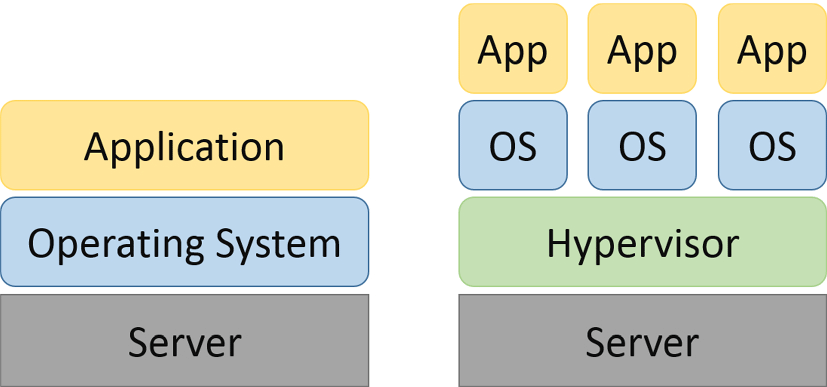
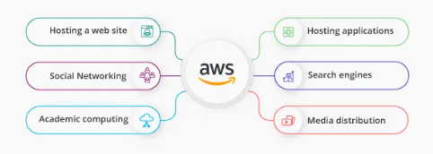
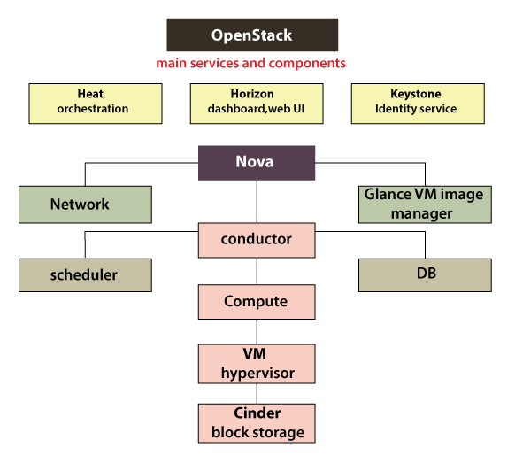
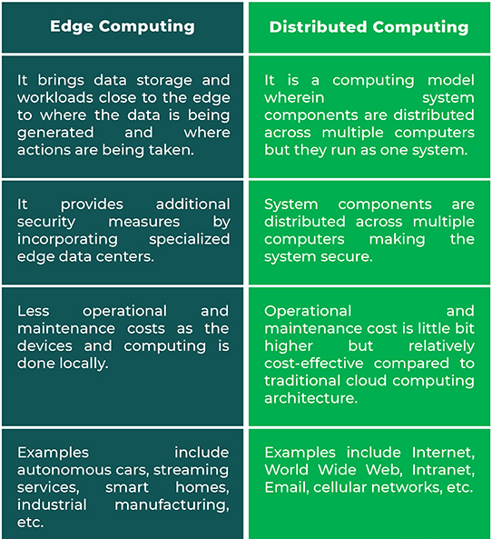
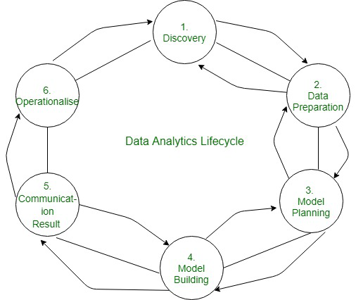
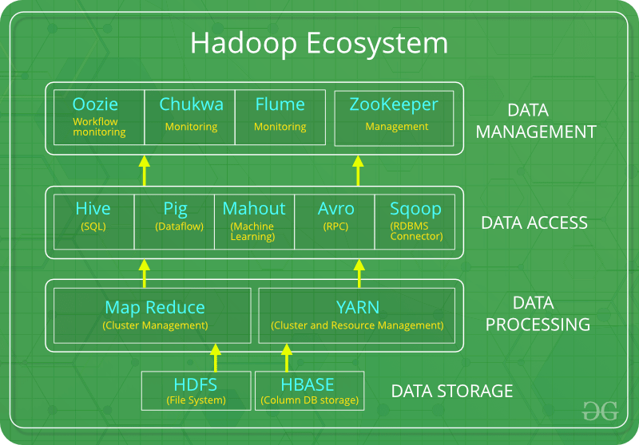

Introduction
Notes for computer engg. sem 6 SPPU university exam
You may notice NEEDS REFACTORING bullets which mean that the topic might be incomplete.
PROGRESS
-
Artificial Intelligence
- Unit III Adversarial Search and Games
- Unit IV Knowledge
- Unit V Reasoning
- Unit VI Planning
- Prelim Questions
-
Cloud Computing
- Unit III Virtualization in Cloud Computing
- Unit IV Cloud Platforms and Cloud Applications
- Unit V Security in Cloud Computing
- Unit VI Advanced Techniques in Cloud Computing
- Prelim Questions
-
Data Science and Big Data
- Unit III Big Data Analytics Life Cycle
- Unit IV Predictive Big Data Analytics with Python
- Unit V Big Data Analytics and Model Evaluation
- Unit VI Data Visualization and Hadoop
- Prelim Questions
-
Web technologies
- Unit III Java Servlets and XML
- Unit IV JSP and Web Services
- Unit V Server Side Scripting Languages
- Unit VI Ruby and Rails
- Prelim Questions
BTW,
-
Entire theory was based on google searches
-
Tried to keep the notes short but failed in some areas.
-
Navigating through the notes is pretty easy:
-
Sidebar can be toggled with the help of the hamburger menu in the top left corner.
-
Use the paint brush button to change the theme.
-
Search button for fast fuzzy search through the entire book.
-
-
To read more information about a topic, look for "More Details" whenever necessary. They are a link to the topic's resource.
-
Improvements are welcome. Email me at: zim@onionmail.org
-
Source code for this book can be found at: https://github.com/zim0369/uniexam.
SYLLABI
Artificial Intelligence
-
Unit III Adversarial Search and Games
Game Theory, Optimal Decisions in Games, Heuristic Alpha–Beta Tree Search, Monte Carlo Tree Search, Stochastic Games, Partially Observable Games, Limitations of Game Search Algorithms, Constraint Satisfaction Problems (CSP), Constraint Propagation: Inference in CSPs, Backtracking Search for CSPs.
-
Unit IV Knowledge
Logical Agents, Knowledge-Based Agents, The Wumpus World, Logic, Propositional Logic: A Very Simple Logic, Propositional Theorem Proving, Effective Propositional Model Checking, Agents Based on Propositional Logic, First-Order Logic, Representation Revisited, Syntax and Semantics of First-Order Logic, Using First-Order Logic, Knowledge Engineering in First-Order Logic.
-
Unit V Reasoning
Inference in First-Order Logic, Propositional vs. First-Order Inference, Unification and First-Order Inference, Forward Chaining, Backward Chaining, Resolution, Knowledge Representation, Ontological Engineering, Categories and Objects, Events, Mental Objects, and Modal Logic, Reasoning Systems for Categories, Reasoning with Default Information
-
Unit VI Planning
Automated Planning, Classical Planning, Algorithms for Classical Planning, Heuristics for Planning, Hierarchical Planning, Planning and Acting in Nondeterministic Domains, Time, Schedules, and Resources, Analysis of Planning Approaches, Limits of AI, Ethics of AI, Future of AI, AI Components, AI Architectures.
Cloud Computing
-
Unit III Virtualization in Cloud Computing
Introduction: Definition of Virtualization, Adopting Virtualization, Types of Virtualization, Virtualization Architecture and Software, Virtual Clustering, Virtualization Application, Pitfalls of Virtualization. Grid, Cloud and Virtualization: Virtualization in Grid, Virtualization in Cloud, Virtualization and Cloud Security. Virtualization and Cloud Computing: Anatomy of Cloud Infrastructure, Virtual infrastructures, CPU Virtualization, Network and Storage Virtualization.
-
Unit IV Cloud Platforms and Cloud Applications
Amazon Web Services (AWS): Amazon Web Services and Components, Amazon Simple DB, Elastic Cloud Computing (EC2), Amazon Storage System, Amazon Database services (Dynamo DB).Microsoft Cloud Services: Azure core concepts, SQL Azure, Windows Azure Platform Appliance. Cloud Computing Applications: Healthcare: ECG Analysis in the Cloud, Biology: Protein Structure Prediction, Geosciences: Satellite Image Processing, Business and Consumer Applications: CRM and ERP, Social Networking, Google Cloud Application: Google App Engine. Overview of OpenStack architecture.
-
Unit V Security in Cloud Computing
Risks in Cloud Computing: Risk Management, Enterprise-Wide Risk Management, Types of Risks in Cloud Computing. Data Security in Cloud: Security Issues, Challenges, advantages, Disadvantages, Cloud Digital persona and Data security, Content Level Security. Cloud Security Services: Confidentiality, Integrity and Availability, Security Authorization Challenges in the Cloud, Secure Cloud Software Requirements, Secure Cloud Software Testing.
-
Unit VI Advanced Techniques in Cloud Computing
Future Tends in cloud Computing, Mobile Cloud, Automatic Cloud Computing: Comet Cloud. Multimedia Cloud: IPTV, Energy Aware Cloud Computing, Jungle Computing, Distributed Cloud Computing Vs Edge Computing, Containers, Docker, and Kubernetes, Introduction to DevOps. IOT and Cloud Convergence: The Cloud and IoT in your Home, The IOT and cloud in your Automobile, PERSONAL: IoT in Healthcare.
Data Science and Big Data
-
Unit III Big Data Analytics Life Cycle
Introduction to Big Data, sources of Big Data, Data Analytic Lifecycle: Introduction, Phase 1: Discovery, Phase 2: Data Preparation, Phase 3: Model Planning, Phase 4: Model Building, Phase 5: Communication results, Phase 6: Operation alize.
-
Unit IV Predictive Big Data Analytics with Python
Introduction, Essential Python Libraries, Basic examples. Data Preprocessing: Removing Duplicates, Transformation of Data using function or mapping, replacing values, Handling Missing Data. Analytics Types: Predictive, Descriptive and Prescriptive. Association Rules: Apriori Algorithm, FP growth. Regression: Linear Regression, Logistic Regression. Classification: Naïve Bayes, Decision Trees. Introduction to Scikit-learn, Installations, Dataset, mat plotlib, filling missing values, Regression and Classification using Scikit-learn.
-
Unit V Big Data Analytics and Model Evaluation
Clustering Algorithms: K-Means, Hierarchical Clustering, Time-series analysis. Introduction to Text Analysis: Text-preprocessing, Bag of words, TF-IDF and topics. Need and Introduction to social network analysis, Introduction to business analysis. Model Evaluation and Selection: Metrics for Evaluating Classifier Performance, Holdout Method and Random Sub sampling, Parameter Tuning and Optimization, Result Interpretation, Clustering and Time-series analysis using Scikit- learn, sklearn. metrics, Confusion matrix, AUC-ROC Curves, Elbow plot.
-
Unit VI Data Visualization and Hadoop
Introduction to Data Visualization, Challenges to Big data visualization, Types of data visualization, Data Visualization Techniques, Visualizing Big Data, Tools used in Data Visualization, Hadoop ecosystem, Map Reduce, Pig, Hive, Analytical techniques used in Big data visualization. Data Visualization using Python: Line plot, Scatter plot, Histogram, Density plot, Box- plot.
Web technologies
-
Unit III Java Servlets and XML
Servlet: Servlet architecture overview, A “Hello World” servlet, Servlets generating dynamic content, Servlet life cycle, parameter data, sessions, cookies, URL rewriting, other Servlet capabilities, data storage, Servlets concurrency, databases (MySQL) and Java Servlets. XML: XML documents and vocabularies, XML declaration, XML Namespaces, DOM based XML processing, transforming XML documents, DTD: Schema, elements, attributes. AJAX: Introduction, Working of AJAX.
-
Unit IV JSP and Web Services
JSP: Introduction to Java Server Pages, JSP and Servlets, running JSP applications, Basic JSP, JavaBeans classes and JSP, Support for the Model-View-Controller paradigm, JSP related technologies. Web Services: Web Service concepts, Writing a Java Web Service, Writing a Java web service client, Describing Web Services: WSDL, Communicating Object data: SOAP. Struts: Overview, architecture, configuration, actions, interceptors, result types, validations, localization, exception handling, annotations.
-
Unit V Server Side Scripting Languages
PHP: Introduction to PHP, uses of PHP, general syntactic characteristics, Primitives, operations and expressions, output, control statements, arrays, functions, pattern matching, form handling, files, cookies, session tracking, using MySQL with PHP, WAP and WML. Introduction to ASP.NET: Overview of the .NET Framework, Overview of C#, Introduction to ASP.NET, ASP.NET Controls, Web Services. Overview of Node JS.
-
Unit VI Ruby and Rails
Introduction to Ruby: Origins & uses of Ruby, scalar types and their operations, simple input and output, control statements, fundamentals of arrays, hashes, methods, classes, code blocks and iterators, pattern matching. Introduction to Rails: Overview of Rails, Document Requests, Processing Forms, Rails Applications and Databases, Layouts, Rails with Ajax. Introduction to EJB.
Artificial Intelligence
-
Unit III Adversarial Search and Games
Game Theory, Optimal Decisions in Games, Heuristic Alpha–Beta Tree Search, Monte Carlo Tree Search, Stochastic Games, Partially Observable Games, Limitations of Game Search Algorithms, Constraint Satisfaction Problems (CSP), Constraint Propagation: Inference in CSPs, Backtracking Search for CSPs.
-
Unit IV Knowledge
Logical Agents, Knowledge-Based Agents, The Wumpus World, Logic, Propositional Logic: A Very Simple Logic, Propositional Theorem Proving, Effective Propositional Model Checking, Agents Based on Propositional Logic, First-Order Logic, Representation Revisited, Syntax and Semantics of First-Order Logic, Using First-Order Logic, Knowledge Engineering in First-Order Logic.
-
Unit V Reasoning
Inference in First-Order Logic, Propositional vs. First-Order Inference, Unification and First-Order Inference, Forward Chaining, Backward Chaining, Resolution, Knowledge Representation, Ontological Engineering, Categories and Objects, Events, Mental Objects, and Modal Logic, Reasoning Systems for Categories, Reasoning with Default Information
-
Unit VI Planning
Automated Planning, Classical Planning, Algorithms for Classical Planning, Heuristics for Planning, Hierarchical Planning, Planning and Acting in Nondeterministic Domains, Time, Schedules, and Resources, Analysis of Planning Approaches, Limits of AI, Ethics of AI, Future of AI, AI Components, AI Architectures.
Adversarial Search and Games
Knowledge
Adversarial Search and Games
Knowledge
Questions
These questions are the questions from SKN's recent(May 2022) prelim examinations
Cloud Computing
-
Unit III Virtualization in Cloud Computing
Introduction: Definition of Virtualization, Adopting Virtualization, Types of Virtualization, Virtualization Architecture and Software, Virtual Clustering, Virtualization Application, Pitfalls of Virtualization. Grid, Cloud and Virtualization: Virtualization in Grid, Virtualization in Cloud, Virtualization and Cloud Security. Virtualization and Cloud Computing: Anatomy of Cloud Infrastructure, Virtual infrastructures, CPU Virtualization, Network and Storage Virtualization.
-
Unit IV Cloud Platforms and Cloud Applications
Amazon Web Services (AWS): Amazon Web Services and Components, Amazon Simple DB, Elastic Cloud Computing (EC2), Amazon Storage System, Amazon Database services (Dynamo DB).Microsoft Cloud Services: Azure core concepts, SQL Azure, Windows Azure Platform Appliance. Cloud Computing Applications: Healthcare: ECG Analysis in the Cloud, Biology: Protein Structure Prediction, Geosciences: Satellite Image Processing, Business and Consumer Applications: CRM and ERP, Social Networking, Google Cloud Application: Google App Engine. Overview of OpenStack architecture.
-
Unit V Security in Cloud Computing
Risks in Cloud Computing: Risk Management, Enterprise-Wide Risk Management, Types of Risks in Cloud Computing. Data Security in Cloud: Security Issues, Challenges, advantages, Disadvantages, Cloud Digital persona and Data security, Content Level Security. Cloud Security Services: Confidentiality, Integrity and Availability, Security Authorization Challenges in the Cloud, Secure Cloud Software Requirements, Secure Cloud Software Testing.
-
Unit VI Advanced Techniques in Cloud Computing
Future Tends in cloud Computing, Mobile Cloud, Automatic Cloud Computing: Comet Cloud. Multimedia Cloud: IPTV, Energy Aware Cloud Computing, Jungle Computing, Distributed Cloud Computing Vs Edge Computing, Containers, Docker, and Kubernetes, Introduction to DevOps. IOT and Cloud Convergence: The Cloud and IoT in your Home, The IOT and cloud in your Automobile, PERSONAL: IoT in Healthcare.
Unit III: Virtualization in Cloud Computing
- Virtualization in cloud computing allows a provider to virtualize servers, storage, or other physical hardware or data center resources, which can then, in turn, allow them to provide numerous services such as infrastructure, software, and platforms.
Adopting Virtualization
-
Some users may confuse virtualization with cloud computing, but they’re not entirely the same.
-
Virtualization is the creation of a virtual resource such as a server, desktop, operating system, file, storage space, or network to help businesses manage and scale workloads.
-
Cloud computing is the sharing of resources, software, applications and data as a service. Together, the two can be used to provide even greater advantages.
-
-
Reasons to adopt virtualization:
- Increased agility for the business
- Better resource deployment
- Greater operational efficiency
- Enhanced security
- Higher availability
- Stronger disaster recovery
- Improved quality of service
- Reduced energy consumption
- Preparation for the cloud
Types of Virtualization
-
Types of Virtualization
- Application Virtualization.
- Network Virtualization.
- Desktop Virtualization.
- Storage Virtualization.
- Server Virtualization.
- Data virtualization.
Virtualization architecture & software
Virtualization architecture
-
A virtualization architecture is a conceptual model specifying the arrangement and interrelationships of the particular components involved in delivering a virtual -- rather than physical -- version of something, such as an operating system (OS), a server, a storage device or network resources.

Left: Traditional architecture | Right: Virtual architecture
Virtualization software
-
Virtualization software, also called hypervisor, allows a single host computer to create and run one or more virtual environments.
-
Virtualization software is most often used to emulate a complete computer system in order to allow a guest operating system to be run, for example allowing Linux to run as a guest on top of a PC that is natively running a Microsoft Windows operating system (or the inverse, running Windows as a guest on Linux).
-
Uses of virtualization software:
- Back up: You can backup your entire operating system or server installation as a virtual OS.
- Run a different OS: Let's say you want to try out Linux without having to install it on a physical hard drive.
- Run ancient apps: Say an application you want to run only works on win8 and you're using win10 then instead of reinstalling an outdated OS on real hardware why not just install windows 8 in a VM.
- Look at dirty files: Taking a look at malicious files might put your computer and your data at risk so it would be better to check it in a sandboxed environment.
- Using sandboxed browsers: Hackers have successfully exploited all four of most popular browsers — Chrome, Internet Explorer, Firefox, and Safari. Browser plugins can be malicious too. In this case using a sandboxed browser like the TOR browser is safer.
- Try an application: You just want to check if an application you wrote works well on multiple operating systems then using virtual machines would be more convenient as compared to installing on real hardware.
Virtual Clustering
-
Virtual clusters are built with VMs installed at distributed servers from one or more physical clus-ters. The VMs in a virtual cluster are interconnected logically by a virtual network across several physical networks. Figure 3.18 illustrates the concepts of virtual clusters and physical clusters. Each virtual cluster is formed with physical machines or a VM hosted by multiple physical clusters. The virtual cluster boundaries are shown as distinct boundaries.
-
The provisioning of VMs to a virtual cluster is done dynamically to have the following interest-ing properties:
- The virtual cluster nodes can be either physical or virtual machines. Multiple VMs running with different OSes can be deployed on the same physical node.
- A VM runs with a guest OS, which is often different from the host OS, that manages the resources in the physical machine, where the VM is implemented.
- The purpose of using VMs is to consolidate multiple functionalities on the same server. This will greatly enhance server utilization and application flexibility.
Virtual Applications
-
Virtual apps are applications that are optimized to run in a virtual environment. Simply put, a virtual app simply runs on a computer without being installed on it.
-
Remote apps are a popular virtual app delivery solution wherein the virtual applications installed on a server are delivered to users’ devices. These applications are not installed on the user’s device; instead, software called a client is installed on the device that connects to the server, and the application is presented as screenshots sent to the device.
-
ThinApp is an example of an agentless application virtualization solution, while Microsoft App-V represents an agent-based virtual app solution. Parallels Remote Application Server, Citrix, and VMware are the leading providers of application virtualization solutions in the market.
Pitfalls of Virtualization
Have added both pros and cons
-
Pros
- Cheaper
- Predictable costs
- reduced workload
- Better uptime
- Faster deployment of resources
- Promotes digital entrepreneurship
- Energy savings
-
Cons(pitfalls)
- High implementation cost
- Has limitations
- Security risk
- Availability issue
- Scalability issue
- Requires several links in a chain that must work together cohesively
- Time consuming
Grid, Cloud & Virtualization
Grid Computing
-
Grid Computing can be defined as a network of computers working together to perform a task that would rather be difficult for a single machine. All machines on that network work under the same protocol to act as a virtual supercomputer.
-
The task that they work on may include analyzing huge datasets or simulating situations that require high computing power.
-
Computers on the network contribute resources like processing power and storage capacity to the network.
-
Grid computing is also called as "distributed computing." It links multiple computing resources (PC's, workstations, servers, and storage elements) together and provides a mechanism to access them.
-
The main advantages of grid computing are that it increases user productivity by providing transparent access to resources, and work can be completed more quickly.
Cloud
-
"The cloud" refers to servers that are accessed over the Internet, and the software and databases that run on those servers. Cloud servers are located in data centers all over the world. By using cloud computing, users and companies do not have to manage physical servers themselves or run software applications on their own machines.
-
The cloud enables users to access the same files and applications from almost any device, because the computing and storage takes place on servers in a data center, instead of locally on the user device. This is why a user can log in to their Instagram account on a new phone after their old phone breaks and still find their old account in place, with all their photos, videos, and conversation history. It works the same way with cloud email providers like Gmail or Microsoft Office 365, and with cloud storage providers like Dropbox or Google Drive.
Virtualization
-
Virtualization in cloud computing is defined as a creation of a virtual version of a server, a desktop, a storage device, an operating system, or network resources.
-
Virtualization in cloud computing allows a provider to virtualize servers, storage, or other physical hardware or data center resources, which can then, in turn, allow them to provide numerous services such as infrastructure, software, and platforms.
-
Virtualization is a technique, which allows to share a single physical instance of a resource or an application among multiple customers and organizations. It does by assigning a logical name to a physical storage and providing a pointer to that physical resource when demanded.
-
Types of Virtualization:
Virtualization in Grid
-
Whereas a grid has many systems in a network and hence multiple people can have ownership. Virtualization helps in providing cloud better security. Grid computing is more economical. It splits the work and distributes it over the network on computers increasing the efficiency as well.
-
Virtualization allows addressing multiple problems in Grid systems, such as coping with the heterogeneity of Grid resources, the difference in software stacks, and enhanced features in resource management such as more general check pointing or migration models. Adopting virtualization in smart ways gets us closer to real Grid computing with more flexibility in the type of applications and the resources to use.
-
Grid computing enables the virtualization of distributed computing resources suchas processing, network bandwidth,and storage capacity to create a single system image, granting users and applications seamless access to vast IT capabilities.
Virtualization in Cloud
-
Virtualization plays a very important role in the cloud computing technology, normally in the cloud computing, users share the data present in the clouds like application etc, but actually with the help of virtualization users shares the Infrastructure.
-
The main usage of Virtualization Technology is to provide the applications with the standard versions to their cloud users, suppose if the next version of that application is released, then cloud provider has to provide the latest version to their cloud users and practically it is possible because it is more expensive.
-
To overcome this problem we use basically virtualization technology, By using virtualization, all severs and the software application which are required by other cloud providers are maintained by the third party people, and the cloud providers has to pay the money on monthly or annual basis.
-
Types of Virtualization in Cloud Computing:
- Application Virtualization
- Network Virtualization
- Desktop Virtualization
- Storage Virtualization
- Server Virtualization
- Data virtualization
Virtualization and Cloud Security.
-
Cloud security, also known as cloud computing security, is a collection of security measures designed to protect cloud-based infrastructure, applications, and data. These measures ensure user and device authentication, data and resource access control, and data privacy protection. They also support regulatory data compliance. Cloud security is employed in cloud environments to protect a company's data from distributed denial of service (DDoS) attacks, malware, hackers, and unauthorized user access or use.
-
Types of clouds:
-
Public clouds: Public cloud services are hosted by third-party cloud service providers. A company doesn't have to set up anything to use the cloud, since the provider handles it all. Usually, clients can access a provider's web services via web browsers. Security features, such as access control, identity management, and authentication, are crucial to public clouds.
-
Private clouds: Private clouds are typically more secure than public clouds, as they're usually dedicated to a single group or user and rely on that group or user's firewall. The isolated nature of these clouds helps them stay secure from outside attacks since they're only accessible by one organization. However, they still face security challenges from some threats, such as social engineering and breaches. These clouds can also be difficult to scale as your company's needs expand.
-
Hybrid clouds: Hybrid clouds combine the scalability of public clouds with the greater control over resources that private clouds offer. These clouds connect multiple environments, such as a private cloud and a public cloud, that can scale more easily based on demand. Successful hybrid clouds allow users to access all their environments in a single integrated content management platform.
-
-
Cloud security is critical since most organizations are already using cloud computing in one form or another. This high rate of adoption of public cloud services is reflected in Gartner’s recent prediction that the worldwide market for public cloud services will grow 23.1% in 2021.
-
Virtualized security, or security virtualization, refers to security solutions that are software-based and designed to work within a virtualized IT environment. This differs from traditional, hardware-based network security, which is static and runs on devices such as traditional firewalls, routers, and switches.
Virtualization and Cloud Computing
Anatomy of Cloud Infrastructure
-
Anatomy of Cloud Computing
-
Provisioning and Configuration Module: It is the lowest level of cloud and typically resides on bare hardware (as a firmware) or on the top of the hypervisor layer. Its function is to abstract the underlying hardware and provide a standard mechanism to spawn instance of virtual machine on demand. It also handles the post-configuration of the operating systems and applications residing on the VM
-
Monitoring and Optimization: This layer handles the monitoring of all services, storage, networking and applications components in cloud. Based on the statistics, it could perform routine functions that optimize the behavior of the infrastructure components and provide relevant data to the cloud administrator to further optimize the configuration for maximum utilization and performance,
-
Metering and Chargeback: This layer provides functions to measure the usage of resources in cloud. The metering module collects all the utilization data per domain per use. This module gives the cloud administrator enough data to measure ongoing utilization of resources and to create invoices based on the usage on a periodic basis.
-
Orchestration: Orchestration is a central to cloud operations. Orchestration converts requests from the service management layer and the monitoring, chargeback modules to appropriate action item which are then submitted to provisioning and configuration module for final closure. Orchestration updates the CMDB in the process.
-
Configuration Management Database (CMDB): It is a central configuration repository wherein all the meta data and configuration of different modules, resources are kept and updated in the real-time basis. The repository can then be accessed using standards protocols like SOAP by third-party software and integration components. All updates in CMDB happen in real time as requests get processed in cloud.
-
Cloud Life cycle Management Layer (CLM): This layer handles the coordination of all other layers in cloud. All requests internal and external are addressed to the CLM layer first. CLM may internally route requests and actions to other layers for further processing.
-
Service Catalog: It is central to the definition of cloud, SC defines what kind of services the cloud is capable of providing and at what cost to the end user. SC is the first thing that is drafted before a cloud is architecture. The service management layer consults SC before it processes any request for a new resource.
-
Virtual infrastructures
-
A virtual infrastructure allows you to utilise the IT capabilities of physical resources as software that can be used across multiple platforms. These resources are shared across multiple virtual machines (VMs) and applications for maximum efficiency, creating a virtual infrastructure.
-
Benefits of virtual infrastructure
- Cost savings: By consolidating servers, virtualization reduces capital and operating costs associated with variables such as electrical power, physical security, hosting and server development.
- Scalability: A virtual infrastructure allows organizations to react quickly to changing customer demands and market trends by ramping up on CPU utilization or scaling back accordingly.
- Increased productivity: Faster provisioning of applications and resources allows IT teams to respond more quickly to employee demands for new tools and technologies.
- Simplified server management: Simplified server management makes sure IT teams can spin up, or down, virtual machines when required and re-provision resources based on real-time needs.
CPU Virtualization
-
CPU Virtualization is a hardware feature found in all current AMD & Intel CPUs that allows a single processor to act as if it was multiple individual CPUs.This allows an operating system to more effectively & efficiently utilize the CPU power in the computer so that it runs faster.
-
CPU Virtualization emphasizes performance, running apps/programs, and runs directly on the processor whenever possible. All operations are controlled by an emulator that controls software to run accordingly, CPU Virtualisation is not the same as emulation. The emulator works the same as a normal computer machine does, it makes a copy of data and generates the same output as a physical machine does. The emulation function gives a feeling of working on multiple platforms while being on a single platform.
-
CPU Virtualization helps all the virtual machines to behave like physical machines and distribute their physical resources like virtual machines sharing their physical memories.
-
CPU Virtualization improves performance and efficiency to a greater extent because virtual machines work on a single CPU, sharing resources is actually like using multiple processors at the same time. This saves Cost and Money.
-
Types of CPU Virtualization:
-
Hardware-assisted CPU Virtualization : Hardware supports CPU Virtualization through certain processors like Guest User. This Uses different versions of code and the mode is known as a Guest mode. The best part of hardware-assisted CPU Virtualization is, it doesn’t need any translation while we use it for Hardware assistance. In short, it uplifts system calls and makes them run faster than expected.
-
Software-based CPU Virtualization : This type of CPU Virtualization is software-based and it helps application code to get executed on a processor. First, the privileged code gets translated, and then translated code is directly executed on the processor. This translation process is known as Binary Translation. The translated code is slow in execution and is very large at the same time. Guest programs that are programmed in privileged coding run very smoothly and fast. Applications with privileged coding would run slower comparatively in a virtual environment.
-
Virtualization and Processor-Specific behavior: Although this software virtualizes the CPU, the virtual machine can detect the model of a processor on which it is running, processor models may differ in CPU features they offer and applications running on these CPUs may use these features. Therefore it is not possible to use v motion to transfer virtual machines running on processors with different feature sets.
-
Network and Storage Virtualization.
Network Virtualization
Network virtualization is a method of combining the available resources in a network to consolidate multiple physical networks, divide a network into segments or create software networks between virtual machines (VMs).
Refer virtualization section for more
Storage Virtualization
Storage virtualization in Cloud Computing is nothing but the sharing of physical storage into multiple storage devices which further appears to be a single storage device. It can be also called as a group of an available storage device which simply manages from a central console.
Refer virtualization section for more
Unit IV: Cloud Platforms and Cloud Applications
Amazon Web Services (AWS): Amazon Web Services and Components
- Amazon Web Services, Inc. is a subsidiary of Amazon that provides on-demand cloud computing platforms and APIs to individuals, companies, and governments, on a metered pay-as-you-go basis. These cloud computing web services provide distributed computing processing capacity and software tools via AWS server farms.
AWS Services

- Amazon Web Services offer the following services for various computing
purposes:
- Hosting a web site
- Social networking
- Academic computing
- Sharing media
- Hosting applications
- Backup, storage, and disaster recovery
- Media distribution and content delivery
- Developing and testing environments
- Search engines
AWS Components
-
Data Management and Data Transfer: To run HPC applications in the AWS cloud, you need to move the required data into the cloud. There are several data transport solutions designed to securely transfer huge amounts of data. This overcomes issues like a long time for transfer, high network costs, and security concerns. Also, you can automate the movement of data between the AWS cloud and on-premises storage. There are options for establishing a private connection to the AWS from your premises. This increases bandwidth to provide more throughput, reduces the cost of the network, and provides a consistent network experience.
-
Compute & Networking: There are several compute instances types that can be customized according to your needs. It also handles monitoring your application and adjusting its capacity for maintaining a steady and predictable performance at an affordable cost. Also, setting up application scaling across multiple services for multiple resources takes a few minutes. Enhanced networking options from AWS allow achieving lower inter-instance latency and higher bandwidth.
-
Storage: When looking for an HPC solution, you need to consider the storage options and cost. There are several flexible blocks, object, and file storage options in AWS services that allow permanent and transient data storage. It allows allocating storage volumes according to the size you need. You can store and access and data type over the cloud without doing a data migration project. Also, with AWS services, you can transfer your workload to the cloud from on-premises.
-
Automation and Orchestration: For using the infrastructure efficiently, you need to automate scheduling submitted jobs and the job submission process. AWS services allow you to run thousands of batch computing jobs through the dynamic provision of the computer resources on the basis of the requirements.
-
Operations and Management: As a system administrator, you are responsible for avoiding cost overruns and monitoring the infrastructure. There are several management and monitoring services that allow you to optimize utilization of resources, monitor the application, get a complete view of operational health, and respond to the performance changes.
-
Visualization: With the AWS services, you can easily visualize the engineering simulations’ results without moving huge amounts of data. Now, you can access the interactive applications remotely over a standard network and deliver application sessions to any workstation.
-
Security and Compliance: For running applications on the cloud, you need to have an understanding of regulatory compliance and security management. There are several quick-launch templates and security related services offered by AWS that helps in protecting data and customer privacy by putting strong safeguards in the AWS infrastructure.
Amazon Simple DB
-
Amazon SimpleDB is a distributed database written in Erlang by Amazon.com. It is used as a web service in concert with Amazon Elastic Compute Cloud and Amazon S3 and is part of Amazon Web Services.
Elastic Cloud Computing (EC2)
-
Amazon Elastic Compute Cloud is a part of Amazon.com's cloud-computing platform, Amazon Web Services, that allows users to rent virtual computers on which to run their own computer applications.
-
EC2 refers to an on-demand computing service on the AWS cloud platform. Under computing, it includes all the services a computing device can offer to you along with the flexibility of a virtual environment. It also allows the user to configure their instances as per their requirements i.e. allocate the RAM, ROM, and storage according to the need of the current task. Even the user can dismantle the virtual device once its task is completed and it is no more required. For providing, all these scalable resources AWS charges some bill amount at the end of every month, bill amount is entirely dependent on your usage.
-
Features of Amazon EC2:
- Functionality: EC2 provides its users a true virtual computing platform, where they can various operations and even launch another EC2 instance from this virtually created environment. This will increase the security of these virtual devices. Not only creating but also EC2 allows us to customize our environment as per our requirements, at any point of time during the life span of this virtual machine. Amazon EC2 itself comes with a set of default AMI(Amazon Machine Image) options supporting various operating systems along with some pre-configured resources like RAM, ROM, storage, etc. Besides these AMI options, we can also create an AMI curated with the combination of default and user-defined configurations. And for future purposes, we can store this user-defined AMI, so that next time, the user won’t have to re-configure a new AMI from scratch. Rather than this whole process, the user can simply use the older reference while creating a new EC2 machine.
- Operating Systems: Amazon EC2 includes a wide range of operating
systems to choose from while selecting your AMI. Not only these selected
options, but users are also even given the privileges to upload their
own operating systems and opt for that while selecting AMI during
launching an EC2 instance. Currently, AWS has the following most
preferred set of operating systems available on the EC2 console.
- Amazon Linux
- Windows Server
- Ubuntu Server
- SUSE Linux
- Red Hat Linux
-
Software: Amazon is single-handedly ruling the cloud computing market, because of the variety of options available on it for its users. It allows its users to choose from various software present to run on their EC2 machines. This whole service is allocated to AWS Marketplace on the AWS platform. Numerous software like SAP, LAMP and Drupal, etc are available on AWS to use.
-
Scalability and Reliability: EC2 provides us the facility to scale up or scale down as per the needs. All dynamic scenarios can easily be tackled by EC2 with the help of this feature. And because of the flexibility of volumes and snapshots, it is highly reliable for its users. Due to the scalable nature of the machine, many organizations like Flipkart, Amazon rely on days whenever humongous traffic occurs on their portals.
Amazon Storage System
-
Amazon Simple Storage Service (Amazon S3) is an object storage service that offers industry-leading scalability, data availability, security, and performance.
Amazon Database services (Dynamo DB).
-
Amazon DynamoDB is a fully managed proprietary NoSQL database service that supports key–value and document data structures and is offered by Amazon.com as part of the Amazon Web Services portfolio. DynamoDB exposes a similar data model to and derives its name from Dynamo, but has a different underlying implementation.
Microsoft Cloud Services
- Microsoft Azure, often referred to as Azure, is a cloud computing service operated by Microsoft for application management via Microsoft-managed data centers.
Azure core concepts
| Concept Name | Description |
|---|---|
| Regions | Azure is a global cloud platform which is available across various regions around the world. When you request a service, application, or VM in Azure, you are first asked to specify a region. The selected region represents datacenter where your application runs. |
| Datacenter | In Azure, you can deploy your applications into a variety of data centers around the globe. So, it is advisable to select a region which is closer to most of your customers. It helps you to reduce latency in network requests. |
| Azure portal | The Azure portal is a web-based application which can be used to create, manage and remove Azure resource and services. It is located at https://portal.azure.com. |
| Resources | Azure resource is an individual computer, networking data or app hosting services which charged individually. Some common resources are virtual machines( VM), storage account, or SQL databases. |
| Resource groups | An Azure resource group is a container which holds related resource for an Azure solution. It may include every resource or just resource which you wants to manage. |
| Resource Manager templates | It is a JSON which defines one or more resource to deploy to a resource group. It also establishes dependencies between deployed resources. |
| Automation: | Azure allows you to automate the process of creating, managing and deleting resource by using PowerShell or the Azure command-line Interface(CLI). |
| Azure PowerShell | PowerShell is a set of modules that offer cmdlets to manage Azure. In most cases, you are allowed to use, the cmdlets command for the same tasks which you are performing in the Azure portal. |
| Azure command-line interface(CLI) | The Azure CLI is a tool that you can use to create, manage, and remove Azure resources from the command line. |
| REST APIs | Azure is built on a set of REST APIs help you perform the same operation that you do in Azure portal Ul. It allows your Azure resources and apps to be manipulated via any third party software application. |
SQL Azure
-
Microsoft Azure SQL Database is a managed cloud database provided as part of Microsoft Azure. A cloud database is a database that runs on a cloud computing platform, and access to it is provided as a service. Managed database services take care of scalability, backup, and high availability of the database.
Windows Azure Platform Appliance.
-
The Windows Azure Platform Appliance consists of Windows Azure, SQL Azure and a Microsoft-specified configuration of network, storage and server hardware. Service providers, governments and large enterprises who would, for example, invest in a 1000 servers at a time, will be able to deploy the Windows Azure platform on their own hardware in their datacenter. Microsoft Windows Azure Platform Appliance is optimized for scale out applications - such as eBay- and datacenter efficiency across hundreds to thousands to tens-of-thousands servers.
Cloud Computing Applications:
-
Cloud service providers provide various applications in the field of art, business, data storage and backup services, education, entertainment, management, social networking, etc.
Healthcare
- Cloud computing in healthcare describes the practice of implementing remote servers accessed via the internet to store, manage and process healthcare-related data. This is in contrast to establishing an on-site data center with servers, or hosting the data on a personal computer.
-
Collaboration: Sharing facilitates collaboration. As healthcare information is meant to stay confidential, with the cloud, the data can be securely shared among all the relevant healthcare stakeholders like doctors, nurses, and care-givers that, too, in real-time.
-
Security: Healthcare data needs to stay confidential. The abundant data held by this domain makes it a focal point of attraction to the malicious actors, resulting in security and data breaches.
-
Cost: Cloud can hold an enormous amount of information at a very minimal cost. Cloud computing works on the pay-as-you-go and subscription model, which indicates you only have to pay for those services which you are availing.
-
Speed: Cloud-based tools can update and upgrade their features at a commendable pace with minimal intervention, and you can get real-time updates as well on all the relevant information.
-
Scalability and Flexibility: Cloud facilitates technologies that are used in healthcare like electronic medical records, mobile apps, patient portals, devices with IoT, big data analytics.
ECG(Electrocardiogram) Analysis in the Cloud
-
ECG analysis in cloud computing: cloud computing technologies allows the remote monitoring of a patient's heart beat data. Through this way the patient at risk can be constantly monitored without going to the hospital for ECG analysis. At the same time the Doctor's can instantly be notified with cases that need's their attention.
-
An ECG is just a visual image of a record of the electrical activity of the heart muscle as it varies over time, typically printed on paper for easier study. Similarly, like other muscles, the heart contracts in response to electrical depolarization caused in the muscle cells. When it's the time of day, it's the amount of the electrical activity, when amplified and registered for just a few seconds that we call a heart rhythm.
-
With ECG data collection and tracking, it's possible to test for chest pain, low-grade heart rhythm disturbances, arrhythmias, and more. An E-G (electrocardiogram) is the electrical expression of the contractile movement of the myocardium.
-
Advantages:
-
Since cloud computing systems are now readily available and deliver the services in less time, it's got the promise to be a massive disruptor to how the technology is distributed.
-
As a consequence, the doctor doesn't need to put a huge effort into computing, since there is a lot of software on which to run.
-
Cloud infrastructure is highly scalable; it can be maximized and minimized according to the needs of each user.
-
Cloud computing (or cloud computing) systems are now available and aim to provide reliable services to consumers with less time.
-
The doctor's office would not need to invest in a broad computer system.
-
Biology
- Cloud computing is an emerging technology that provides various computing services on demand. It provides convenient access to a shared pool of higher-level services and other system resources. Nowadays, cloud computing has a great significance in the fields of geology, biology, and other scientific research areas.
Protein Structure Prediction
-
Protein structure prediction is the best example in research area that makes use of cloud applications for its computation and storage.
-
A protein is composed of long chains of amino acids joined together by peptide bonds. The various structures of protein help in the designing of new drugs and the various sequences of proteins from its three-dimensional structure in predictive form is known as a Protein structure prediction.
-
Firstly primary structures of proteins are formed and then prediction of the secondary, tertiary and quaternary structures are done from the primary one. In this way predictions of protein structures are done. Protein structure prediction also makes use of various other technologies like artificial neural networks, artificial intelligence, machine learning and probabilistic techniques, also holds great importance in fields like theoretical chemistry and bioinformatics.
-
There are various algorithms and tools that exists for protein structure prediction. CASP (Critical Assessment of Protein Structure Prediction) is a well-known tool that provides methods for automated web servers and the results of research work are placed on clouds like CAMEO (Continuous Automated Model Evaluation) server. These servers can be accessed by anyone as per their requirements from any place. Some of the tools or servers used in protein structure prediction are Phobius, FoldX, LOMETS, Prime, Predict protein, SignalP, BBSP, EVfold, Biskit, HHpred, Phre, ESyired3D. Using these tools new structures are predicted and the results are placed on the cloud-based servers.
Geosciences
- Earth science or geoscience includes all fields of natural science related to the planet Earth.
Satellite Image Processing,
-
Satellite Image Processing is an important field in research and development and consists of the images of earth and satellites taken by the means of artificial satellites. Firstly, the photographs are taken in digital form and later are processed by the computers to extract the information. Statistical methods are applied to the digital images and after processing the various discrete surfaces are identified by analyzing the pixel values.
-
Majorly there are four kinds of resolutions associated with satellite imagery. These are:
- Spatial resolution: It is determined by the sensors Instantaneous Field of View(IFoV) and is defined as the pixel size of an image that is visible to the human eye being measured on the ground. Since it has high resolving power or the ability to separate and hence is termed as Spatial Resolution.
- Spectral resolution: This resolution measures the wavelength internal size and determines the number of wavelength intervals that the sensor measures.
- Temporal resolution: The word temporal is associated with time or days and is defined as the time that passes between various imagery cloud periods.
- Radiometric resolution: This resolution provides the actual characteristics of the image and is generally expressed in bits size. It gives the effective bit depth and records the various levels of brightness of imaging system.
Business and Consumer Applications
CRM and ERP
-
CRM (Customer Relationship Management) and ERP (Enterprise Resource Planning) software are powerful tools for a business or enterprise to use. CRM handles the sales, marketing, and customer service information.
Social Networking
-
Social networks help boost internet usability by storing heavy multimedia content in cloud storage systems. Videos and photographs are the most popular content on social media, which essentially use up the maximum space allocated to them. They have the capacity to slow down applications and servers with all of their resource demands. Cloud computing vendors such as Salesforce and Amazon nowadays provide varied services including Customer Relationship Management (CRM) and Enterprise Resource Planning (ERP). As they deliver these things through cloud servers, clients can use the flexibility and scalability of the system without purchasing standalone software or hardware.
-
Apart from data storage, the social networks are now also using clouds for various other tasks. For example, this can be ideal for big data analytics. One of the benefits of using cloud systems is that users can access vast amount of structured and even non-structured data easily. Just take a look at the much-improved analytics provided by sites like Facebook, especially for its business users.
-
Another way cloud computing becomes helpful is by reducing the cost of data backup and recovery in case of a disaster. If the data is only stored in one central location, it becomes much riskier. If something happens there, it is almost impossible to recover the data. But through cloud they remain accessible through shared resources across the globe. This is especially useful for social networks as the store personal data of its users, and so cannot afford to lose even one part of it.
Google Cloud Application
- Google Cloud Platform, offered by Google, is a suite of cloud computing services that runs on the same infrastructure that Google uses internally for its end-user products, such as Google Search, Gmail, Google Drive, and YouTube.
Google App Engine.
-
Google App Engine is a cloud computing platform as a service for developing and hosting web applications in Google-managed data centers. Applications are sandboxed and run across multiple servers.
Overview of OpenStack architecture.
-
OpenStack is a free, open standard cloud computing platform. It is mostly deployed as infrastructure-as-a-service in both public and private clouds where virtual servers and other resources are made available to users.
-
OpenStack contains a modular architecture along with several code names for the components.

Unit V: Security in Cloud Computing
Risks in Cloud Computing
Risk Management
-
Risk management is one of the cloud computing environment controls which aims to assess and manage risks related to cloud computing and to prevent those risks from impacting.
-
The risk-based approach of managing information systems is a holistic activity that needs to be fully integrated into every aspect of the organization, from planning to system development life cycle processes, to security controls allocation and continuous monitoring. Therefore, a Risk Management Framework (RMF) provides a disciplined and structured process that integrates information security and risk management activities into the system development life cycle. An RMF operates primarily at tier 3 in the risk management hierarchy, but it can also have interactions at tier 1 and tier 2.
Enterprise-Wide Risk Management
-
Enterprise-wide risk management (ERM) is a process of coordinated risk management that places greater emphasis on co-operation among departments to manage an organisation's range of risks as a whole. ERM offers a framework to effectively manage uncertainty, respond to risk and exploit opportunities as they arise.
-
Five steps to ERM are:
- Identify Risk
- Analyze Risk
- Evaluate or Rank Risk
- Treat Risk or Control Risk
- Monitor and Review Risk
Types of Risks in Cloud Computing
-
Data Loss: Data loss is the most common cloud security risks of cloud computing. It is also known as data leakage. Data loss is the process in which data is being deleted, corrupted, and unreadable by a user, software, or application. In a cloud computing environment, data loss occurs when our sensitive data is somebody else's hands, one or more data elements can not be utilized by the data owner, hard disk is not working properly, and software is not updated.
-
Hacked Interfaces and Insecure APIs: As we all know, cloud computing is completely depends on Internet, so it is compulsory to protect interfaces and APIs that are used by external users. APIs are the easiest way to communicate with most of the cloud services. In cloud computing, few services are available in the public domain. These services can be accessed by third parties, so there may be a chance that these services easily harmed and hacked by hackers.
-
Data Breach: Data Breach is the process in which the confidential data is viewed, accessed, or stolen by the third party without any authorization, so organization's data is hacked by the hackers.
-
Vendor lock-in: Vendor lock-in is the of the biggest security risks in cloud computing. Organizations may face problems when transferring their services from one vendor to another. As different vendors provide different platforms, that can cause difficulty moving one cloud to another.
-
Increased complexity strains IT staff: Migrating, integrating, and operating the cloud services is complex for the IT staff. IT staff must require the extra capability and skills to manage, integrate, and maintain the data to the cloud.
-
Spectre & Meltdown: Spectre & Meltdown allows programs to view and steal data which is currently processed on computer. It can run on personal computers, mobile devices, and in the cloud. It can store the password, your personal information such as images, emails, and business documents in the memory of other running programs.
-
Denial of Service (DoS) attacks: Denial of service (DoS) attacks occur when the system receives too much traffic to buffer the server. Mostly, DoS attackers target web servers of large organizations such as banking sectors, media companies, and government organizations. To recover the lost data, DoS attackers charge a great deal of time and money to handle the data.
-
Account hijacking: Account hijacking is a serious security risk in cloud computing. It is the process in which individual user's or organization's cloud account (bank account, e-mail account, and social media account) is stolen by hackers. The hackers use the stolen account to perform unauthorized activities.
Data Security in Cloud
-
The three letters in "CIA triad" stand for Confidentiality, Integrity, and Availability. The CIA triad is a common model that forms the basis for the development of security systems. They are used for finding vulnerabilities and methods for creating solutions.
-
The core principles of information security and data governance—data confidentiality, integrity, and availability (known as the CIA triad)—also apply to the cloud:
- Confidentiality: protecting the data from unauthorized access and disclosure
- Integrity: safeguard the data from unauthorized modification so it can be trusted
- Availability: ensuring the data is fully available and accessible when it’s needed
MORE DETAILED
-
Confidentiality: Confidentiality involves the efforts of an organization to make sure data is kept secret or private. To accomplish this, access to information must be controlled to prevent the unauthorized sharing of data—whether intentional or accidental. A key component of maintaining confidentiality is making sure that people without proper authorization are prevented from accessing assets important to your business. Conversely, an effective system also ensures that those who need to have access have the necessary privileges.
For example, those who work with an organization’s finances should be able to access the spreadsheets, bank accounts, and other information related to the flow of money. However, the vast majority of other employees—and perhaps even certain executives—may not be granted access. To ensure these policies are followed, stringent restrictions have to be in place to limit who can see what.
-
Integrity: Integrity involves making sure your data is trustworthy and free from tampering. The integrity of your data is maintained only if the data is authentic, accurate, and reliable.
For example, if your company provides information about senior managers on your website, this information needs to have integrity. If it is inaccurate, those visiting the website for information may feel your organization is not trustworthy. Someone with a vested interest in damaging the reputation of your organization may try to hack your website and alter the descriptions, photographs, or titles of the executives to hurt their reputation or that of the company as a whole.
-
Availability: Even if data is kept confidential and its integrity maintained, it is often useless unless it is available to those in the organization and the customers they serve. This means that systems, networks, and applications must be functioning as they should and when they should. Also, individuals with access to specific information must be able to consume it when they need to, and getting to the data should not take an inordinate amount of time.
If, for example, there is a power outage and there is no disaster recovery system in place to help users regain access to critical systems, availability will be compromised. Also, a natural disaster like a flood or even a severe snowstorm may prevent users from getting to the office, which can interrupt the availability of their workstations and other devices that provide business-critical information or applications. Availability can also be compromised through deliberate acts of sabotage, such as the use of denial-of-service (DoS) attacks or ransomware.
Security Issues
-
Data Loss: Data Loss is one of the issues faced in Cloud Computing. This is also known as Data Leakage. As we know that our sensitive data is in the hands of Somebody else, and we don’t have full control over our database. So if the security of cloud service is to break by hackers then it may be possible that hackers will get access to our sensitive data or personal files.
-
Interference of Hackers and Insecure API’s: As we know if we are talking about the cloud and its services it means we are talking about the Internet. Also, we know that the easiest way to communicate with Cloud is using API. So it is important to protect the Interface’s and API’s which are used by an external user. But also in cloud computing, few services are available in the public domain. An is the vulnerable part of Cloud Computing because it may be possible that these services are accessed by some third parties. So it may be possible that with the help of these services hackers can easily hack or harm our data.
-
User Account Hijacking: Account Hijacking is the most serious security issue in Cloud Computing. If somehow the Account of User or an Organization is hijacked by Hacker. Then the hacker has full authority to perform Unauthorized Activities.
-
Changing Service Provider: Vendor lock In is also an important Security issue in Cloud Computing. Many organizations will face different problems while shifting from one vendor to another. For example, An Organization wants to shift from AWS Cloud to Google Cloud Services then they ace various problem’s like shifting of all data, also both cloud services have different techniques and functions, so they also face problems regarding that. Also, it may be possible that the charges of AWS are different from Google Cloud, etc.
-
Lack of Skill: While working, shifting o another service provider, need an extra feature, how to use a feature, etc. are the main problems caused in IT Company who doesn’t have skilled Employee. So it requires a skilled person to work with cloud Computing.
-
Denial of Service (DoS) attack: This type of attack occurs when the system receives too much traffic. Mostly DoS attacks occur in large organizations such as the banking sector, government sector, etc. When a DoS attack occurs data is lost. So in order to recover data, it requires a great amount of money as well as time to handle it.
Challenges
-
DDoS and Denial-of-Service Attacks: As more and more businesses and operations move to the cloud, cloud providers are becoming a bigger target for malicious attacks. Distributed denial of service (DDoS) attacks are more common than ever before. Verisign reported IT services, cloud platforms (PaaS) and SaaS was the most frequently targeted industry during the first quarter of 2015.
-
Data breaches: Known data breaches in the U.S. hit a record-high of 738 in 2014, according to the Identity Theft Research Center, and hacking was (by far) the number one cause. That’s an incredible statistic and only emphasizes the growing challenge to secure sensitive data.
-
Data loss: When business critical information is moved into the cloud, it’s understandable to be concerned with its security. Losing cloud data, either through accidental deletion and human error, malicious tampering including the installation of malware (i.e. DDoS), or an act of nature that brings down a cloud service provider, could be disastrous for an enterprise business. Often a DDoS attack is only a diversion for a greater threat, such as an attempt to steal or delete data.
-
Insecure access control points: One of the great benefits of the cloud is it can be accessed from anywhere and from any device. But, what if the interfaces and particularly the application programming interfaces (APIs) users interact with aren’t secure? Hackers can find and gain access to these types of vulnerabilities and exploit authentication via APIs if given enough time.
-
Notifications and alerts: Awareness and proper communication of security threats is a cornerstone of network security and the same goes for cloud computing security. Alerting the appropriate website or application managers as soon as a threat is identified should be part of a thorough data security and access management plan. Speedy mitigation of a threat relies on clear and prompt communication so steps can be taken by the proper entities and impact of the threat minimized.
Advantages
-
24×7 Visibility: The best cloud security solutions like AppTrana enable 24×7 monitoring of the application and cloud-based assets. This helps organizations to have continuous visibility into their risk posture and its impact on the business.
-
Higher Availability: Cloud computing security solutions typically have built-in redundancies to ensure that the application/ resources are always available. The CDNs used have distributed global networks of edge servers that deliver content optimally, accelerate application performance, and minimize access to the server. Together, they handle traffic surges in a way that on-premises/ hardware solutions cannot.
-
Effective protection against DDoS Attacks: Cloud security solutions provide the most effective protection against DDoS attacks, which are increasing in numbers, magnitude, sophistication, and severity. Cloud computing security helps to continuously monitor, identify, analyze, and mitigate DDoS attacks. The built-in redundancies, customizability, flexibility, scalability, and intelligence of such solutions can prevent volumetric, low, and slow attacks.
-
Data Security: The best cloud computing security solutions provide data security by design. They have security protocols and policies such as strong access controls and data encryption to prevent unauthorized entities from accessing confidential information.
-
Pay as you Go Model: The cloud security model ensures that you pay only for what you use and consume as opposed to making any upfront investment.
-
Advanced Threat Detection: By using end-point scanning and global threat intelligence, cloud computing security can detect threats more easily.
-
Regulatory Compliance: Top-notch cloud application security providers help to ensure regulatory standards and industry-specific compliance needs. This is done through its enhanced infrastructure and managed security services.
Disadvantages
-
Risk of data confidentiality: There is always a risk that user data can be accessed by other people. So data and cloud protection must be good because if it won’t be dangerous for data confidentiality.
-
Depends on internet connection: The internet is the only way to cloud computing. When there is no internet connection in your place, or the internet path to the cloud provider is in trouble, automatically access to your cloud computing machine will be disconnected. Now this is where the biggest obstacle is happening in developing countries and remote areas that do not have good internet access.And the weakness of public cloud is where everyone accesses the same server and server and will increase the risk of attack, and down the server.
-
The level of security: Secrecy and security are among the most doubtful things in cloud computing. By using a cloud computing system means we are fully entrusted with the security and confidentiality of data to companies that provide cloud computing servers. When you experience a problem, you cannot sue the server for errors in the data. When you experience a problem, you cannot sue the server for errors in the data.
-
Compliance: Which refers to the risk of a level compliance deviation from the provider against the regulations applied by the user.
-
Vulnerable in the event of an attack: There are lots of arguments against cloud computing one of which is computing because the Cloud Computing work system is online, each component that is on Cloud Computing can be exposed to a wide range, this is a wide open opportunity for attacks on data or activities stored on the server. When an attack is carried out by hackers, the problems that occur are data security, and data privacy.
-
Data Mobility: which refers to the possibility of sharing data between cloud services and how to retrieve data if one day the user makes a process of terminating cloud computing services.And there is local storage where the data can be used at any time as needed.
-
Technical problem: Besides that the use of Cloud Computing makes you unable to manage it yourself when there is a problem or a problem, you must contact customer support who is not necessarily ready 24/7. This is a problem because for some support you also have to pay more money.
-
Low Connection: Does not work well if the connection is slow. The quality of cloud computing servers is one of the most important considerations before we decide to provide cloud computing server service providers. When the server is down or the permorma is not good, we will be harmed because of poor server quality.
Cloud Digital persona and Data security
-
Digital Persona: The digital representation of someone's personal information that is purposely created by the user or collected without the user's knowledge. For security purposes, people might create a digital persona with a Google Voice phone number that forwards to their private number. However, almost everyone who uses the Internet has a digital persona that is created by third parties and derived from their Web surfing history and social media posts.
-
For more details find digital persona section on this web page
-
Data Security: Refer Data Security section above
Content Level Security
- Content Level Security (CLS) is a feature that controls who has access to edit or read content. During the process of creating a document, the content goes through several stages. Each stage requires input from users with different roles.
Cloud Security Services
-
Identity and access: You are provided with control for secured management of identities and access. It includes people, processes and systems used for managing access to your enterprise resources. It is managed by making sure that the identity of the user is verified and the access rights are provided at the correct level.
-
Data loss prevention: This service offers protection of data by providing you with pre-installed data loss prevention software, along with a set of rules deployed.
-
Web security: Web security is provided as an additional protection against malware from entering the enterprise through web browsing and other such activities. This cloud service is provided either by installing a software or an appliance or through the cloud by redirecting your web traffic over to the cloud provider.
-
E-mail security: It provides control over the in-bound and out-bound e-mails to protect your organization from malicious attachments and phishing. This cloud service helps enforce corporate policies such as acceptable use, spam and in providing business continuity options. One of the solution adopted by many cloud e-mail security services is digital signatures, which allows identification and non-repudiation.
-
Security assessment: There are various tools implemented for the users of the SaaS delivery model, such as variant elasticity, low administration overhead, negligible setup time and pay-per use with low investment in the initial stage.
-
Intrusion management: It is the process that uses pattern recognition for detection and reaction to events that are statistically unusual and unexpected. It may also require reconfiguration of your system components in real time so as to prevent an intrusion.
-
Security information and managing events: Your system gathers information related to log and events. This information is used in correlating and analyzing, to provide you with real time reporting and alerts on events that require intervention.
-
Encryption: There are typical algorithms that are computationally difficult or nearly impossible to break.
-
Disaster management: This cloud service helps in continuing your business and managing disasters by providing flexibility and reliable failover for services that are required in case of service interruptions.
-
Network security: The network security services provides you with address security controls, which in a cloud environment is generally provided through virtual devices.
Confidentiality
-
Data confidentiality is the process of protecting data from illegal access and disclosure from the outsourced server and unauthorized users. This is done by encrypting the data so that only the authorized users can decrypt it.
Integrity and Availability
-
Integrity: Protect the data from the unauthorized insert, update, or delete. The data owner and authorized users should be able to recognize if the data is corrupted or incomplete, and receive the most recent updated version of the data, which guarantees accuracy and consistency of data.
-
Availability: The data in the cloud servers should be accessible to its users. Major threats to availability are denial of service (DOS) attacks, natural disasters, and equipment failures at the service provider’s end.
Security Authorization Challenges in the Cloud
-
Data Breaches: Consequences of a data breach may include: Data breaches put classified data at risk.
-
Misconfiguration and Inadequate Change Control: This is one of the most common challenges of the cloud. In 2017, a misconfigured AWS Simple Storage Service (S3) cloud storage bucket exposed detailed and private data of 123 million American households.
-
Lack of Cloud Security Architecture and Strategy: One of the biggest challenges is the implementation of appropriate security architecture to withstand cyberattacks. Unfortunately, this process is still a mystery for many organizations.
-
Insufficient Identity, Credential, Access and Key Management: In both public and private cloud settings, CSPs and cloud consumers are required to manage IAM without compromising security.
-
Account Hijacking: Account hijacking is a threat in which malicious attackers gain access to and abuse accounts that are highly privileged or sensitive. In cloud environments, the accounts with the highest risks are cloud service accounts or subscriptions.
-
Insider Threat: Insider negligence is the cause of most security incidents. Employee or contractor negligence was the root cause of most of the reported insider incidents. Some common scenarios cited include: misconfigured cloud servers, employees storing sensitive company data on their own insecure personal devices and systems, and employees or other insiders falling prey to phishing emails that led to malicious attacks on company assets.
-
Insecure Interfaces and APIs: Poorly designed APIs could lead to misuse or—even worse—a data breach. Broken, exposed, or hacked APIs have caused some major data breaches.
-
Limited Cloud Usage Visibility: Limited cloud usage visibility occurs when an organization does not possess the ability to visualize and analyze whether cloud service use within the organization is safe or malicious. This scenario results in a self-support model called Shadow IT. one-third of all successful security attacks on companies will come through shadow IT systems and resources.
Secure Cloud Software Requirements
-
Top-of-the-Line Perimeter Firewall: Most firewalls are very simple—they typically inspect a packet’s source and destination and that’s all. Some more advanced firewalls feature stable packet inspection, which checks the integrity of the file packets for stability issues prior to approving or rejecting the packet.
-
Intrusion Detection Systems with Event Logging: Numerous IT security compliance standards require businesses to have a means of tracking and recording intrusion attempts. So, for any business that wants to meet compliance standards such as PCI or HIPAA, using IDS event logging solutions is a must.
-
Internal Firewalls for Individual Applications, and Databases: While having a strong perimeter firewall can block external attacks, internal attacks are still a major threat. Infrastructures that lack internal firewalls to restrict access to sensitive data and applications cannot be considered secure.
-
Data-at-Rest Encryption: Encrypting the data that is stored on your cloud infrastructure can be an effective way to keep your most sensitive information from being accessed by the wrong party.
-
Tier IV Data Centers with Strong Physical Security: The physical hardware used to run a cloud environment represents one last opportunity for hackers and industrial spies to steal your most important data. When allowed direct access to the hardware that runs the cloud, hackers have free reign to steal data or upload malware directly to your systems.
Secure Cloud Software Testing
-
Cloud penetration testing is designed to assess the strengths and weaknesses of a cloud system to improve its overall security posture. Cloud penetration testing helps to: Identify risks, vulnerabilities, and gaps. Impact of exploitable vulnerabilities. Determine how to leverage any access obtained via exploitation.
Unit VI Advanced Techniques in Cloud Computing
Future Trends in Cloud Computing
-
Hybrid/ Multi-Cloud Solutions: Hybrid cloud computing refers to using a combination of the private cloud as well as a third-party public cloud service. It is primarily used to allow workloads to move between private and public clouds, giving users more flexibility with their computing needs.
-
Backup And Disaster Recovery: Cyber attacks, data outages, and system failures are a part and parcel of running a business these days. Most businesses have dealt with their servers crashing, leading to loss of critical data files. To ensure such issues don’t damage the organization and its processes, backup and disaster recovery has become a trending use case of the cloud. If Spiceworks reports are to be believed, 15% of the cloud budget is allocated to Backup and Disaster Recovery, which is the highest budget allocation followed by email hosting and productivity tools.
-
Serverless Architecture: A serverless architecture removes all barriers that a standard IT infrastructure would usually bring. Users don’t have to purchase or rent the servers that they run their data on. Instead, a third-party will handle it all for you, allowing your organization to tackle other tasks.
-
AI Platform: As technology advances, one of the most common cloud computing trends to look forward to is AI. Tech giants are now looking into incorporating AI to process big data to improve their business functioning.
-
Cloud Security: Data theft, leakage, and deletion- security is a big challenge even for traditional IT infrastructures. But, with more companies moving to cloud platforms, it’s important to ensure that cloud service providers can create an airtight security system to guarantee the safety of their client’s data.
-
IoT Platform: With a hyper-connected world, one of the most popular cloud computing trends is the rise of IoT platforms. A study by Gartner suggests the number of connected things in use will be going up to 25 billion by 2021 from 14.2 billion as of 2019.
-
Edge Computing: It is a method of optimizing cloud computing network system by performing data processing at the edge of the network, near the source of the data. It works real-time on the cloud servers to process less time-sensitive data or store data for the long term.
-
DevSecOps: Cloud computing services provide users with a seamless and simple experience in managing their data but there are many security risks involved. The security risk of cloud computing includes network eavesdropping, illegal invasion, denial of service attacks, side channel attacks, virtualization vulnerabilities, and abuse of cloud services.
-
Service Mesh: Since cloud platforms are complex, it is critical to ensure that the platform has a fast and safe communication environment. With a service mesh, users have a dedicated layer for service-to-service communication, making their cloud platform highly dynamic and secure.
-
Open Source: This industry is moving towards a path of innovation and collaboration. With this shift in how cloud services are managed, many organizations are looking at adopting an Open Source cloud computing service for their business.
Mobile Cloud
-
Mobile cloud computing uses cloud computing to deliver applications to mobile devices. These mobile apps can be deployed remotely using speed and flexibility and development tools. Mobile cloud applications can be built or revised quickly using cloud services. They can be delivered to many different devices with different operating systems, computing tasks, and data storage. Thus, users can access applications that could not otherwise be supported.
-
Key features:
- Facilitates the quick development, Shared resources of mobile apps.
- Supports a variety of development approaches and devices.
- Improves reliability with information backed up and stored in the cloud.
- Applications use fewer device resources because they are cloud-supported.
- Mobile devices are connected to services delivered on an API architecture.
Automatic Cloud Computing
-
Cloud automation is a broad term that refers to processes and tools that reduce or eliminate manual efforts used to provision and manage cloud computing workloads and services. Organizations can apply cloud automation to private, public and hybrid cloud environments.
-
Benefits:
- Improved security and resilience
- Improved backup processes
- Improved governance
Comet Cloud
-
COMET Cloud is an Internet data storage designed for recording measured values from selected COMET measuring instruments. The data is accessible after the user's connection to the Internet and is displayed in a web browser in the form of a table or graph.
-
Main features of COMETCloud
- display of measured values in the form of a table or graph
- comparison of measured values of several sensors in one time period
- storing GPS coordinates for the device position and displaying all devices on a map
- user-friendly display of measured values in an embedded image of a building or technology diagram
- user name of each device
- insert a note for each device
Multimedia Cloud
-
Cloud Computing opened the opportunity for media operators who serve content providers, IPTV (Internet Protocol Television) operators and multimedia players. When we consider multimedia players, adopting cloud computing is often one of the important priorities in the coming years. Some media players, for example, companies like media post-production, already utilize these kinds of cloud computing–based service capabilities for managing the digital delivery.
-
In the future, multimedia companies will use cloud computing first, who started looking to move their storage requirements into cloud computing. The cost and the investment return for these kinds of services have accelerated.
IPTV
-
Internet Protocol television (IPTV) is the delivery of television content over Internet Protocol (IP) networks. This is in contrast to delivery through traditional terrestrial, satellite, and cable television formats. Unlike downloaded media, IPTV offers the ability to stream the source media continuously. As a result, a client media player can begin playing the content (such as a TV channel) almost immediately. This is known as streaming media.
Energy Aware Cloud Computing
-
Cloud infrastructures are increasingly becoming essential components for providing Internet services. By benefiting from economies of scale, Clouds can efficiently manage and offer a virtually unlimited number of resources and can minimize the costs incurred by organizations when providing Internet services. However, as Cloud providers often rely on large data centres to sustain their business and offer the resources that users need, the energy consumed by Cloud infrastructures has become a key environmental and economical concern.
-
Implementing efficient techniques, frameworks, etc. for better energy efficiency in cloud computing is called "Energy Aware Cloud Computing".
Jungle Computing
-
Jungle computing is a form of high performance computing that distributes computational work across cluster, grid and cloud computing.
-
The increasing complexity of the high performance computing environment has provided a range of choices beside traditional supercomputers and clusters. Scientists can now use grid and cloud infrastructures, in a variety of combinations along with traditional supercomputers - all connected via fast networks. And the emergence of many-core technologies such as GPUs, as well as supercomputers on chip within these environments has added to the complexity. Thus, high-performance computing can now use multiple diverse platforms and systems simultaneously, giving rise to the term "computing jungle".
Distributed Cloud Computing Vs Edge Computing
-
A distributed cloud is an architecture where multiple clouds are used to meet compliance needs, performance requirements, or support edge computing while being centrally managed from the public cloud provider.
-
In essence, a distributed cloud service is a public cloud that runs in multiple locations, including:
- The public cloud provider’s infrastructure
- The public cloud provider’s infrastructure
- In another cloud provider’s data center
- On third party or colocation center hardware
-
Edge vs Distributed Computing:

Containers
-
Containers are lightweight packages of your application code together with dependencies such as specific versions of programming language runtimes and libraries required to run your software services.
-
Containers are packages of software that contain all of the necessary elements to run in any environment. In this way, containers virtualize the operating system and run anywhere, from a private data center to the public cloud or even on a developer’s personal laptop.
-
Containers make it easy to share CPU, memory, storage, and network resources at the operating systems level and offer a logical packaging mechanism in which applications can be abstracted from the environment in which they actually run.
-
Benefits Of Containers:
-
Separation of responsibility: Containerization provides a clear separation of responsibility, as developers focus on application logic and dependencies, while IT operations teams can focus on deployment and management instead of application details such as specific software versions and configurations.
-
Workload portability: Containers can run virtually anywhere, greatly easing development and deployment: on Linux, Windows, and Mac operating systems; on virtual machines or on physical servers; on a developer’s machine or in data centers on-premises; and of course, in the public cloud.
-
Application isolation: Containers virtualize CPU, memory, storage, and network resources at the operating system level, providing developers with a view of the OS logically isolated from other applications.
-
Docker
-
Docker is a set of platform as a service products that use OS-level virtualization to deliver software in packages called containers. The service has both free and premium tiers. The software that hosts the containers is called Docker Engine.
Kubernetes
-
Kubernetes is an open-source container orchestration system for automating software deployment, scaling, and management. Google originally designed Kubernetes, but the Cloud Native Computing Foundation now maintains the project.
Introduction to DevOps
-
DevOps is the combination of cultural philosophies, practices, and tools that increases an organization's ability to deliver applications and services at high velocity: evolving and improving products at a faster pace than organizations using traditional software development and infrastructure management processes.
-
A DevOps engineer introduces processes, tools, and methodologies to balance needs throughout the software development life cycle, from coding and deployment, to maintenance and updates.
IoT and Cloud Convergence
-
The Internet of things describes physical objects with sensors, processing ability, software, and other technologies that connect and exchange data with other devices and systems over the Internet or other communications networks.
-
The field has evolved due to the convergence of multiple technologies, including ubiquitous computing, commodity sensors, increasingly powerful embedded systems, and machine learning.
The Cloud and IoT in your Home
-
Home cloud computing is the process of using a remote server to store, manage and access data and applications from home. It allows users to access their files, applications, and other digital content from any device with an internet connection, whether it be a computer, phone, or tablet. Private cloud computing can also be used to back up data and protect the information in case of emergencies.
-
A lot of individuals and small businesses use home/private cloud computing to browse, search through files and even work on projects from any device. It’s a great alternative to setting up a server in your house because it eliminates the need for physical storage devices that contain data.
-
IoT home automation is the ability to control domestic appliances by electronically controlled, internet-connected systems. It may include setting complex heating and lighting systems in advance and setting alarms and home security controls, all connected by a central hub and remote-controlled by a mobile app.
The IoT and cloud in your Automobile
IoT in Automobile
-
“Automotive IoT” refers to the integration of such components as sensors, gadgets, clouds, and apps into vehicles and their use as a complex system for predictive maintenance, connection of cars, fleet management, etc.
-
Implementation of the Internet of Things for cars’ manufacturing brought the following benefits for the producers:
- better data collection and analysis with the following improvement and speed up of the whole manufacturing process;
- avoidance of certain risks and financial losses;
- higher industrial safety standards;
- equipment theft monitoring, etc.
Cloud in Automobile
-
The way we interact with our car changed entirely in a few decades. Nowadays, cloud technology in cars is present in several ways. For example, most electric cars can exchange information with remote data centers to inform the driver about the road and weather conditions.
-
The cloud technology in cars has a lot of possibilities. It is uniquely suited to set up, scale, manage and update features and services efficiently with a connected unit.
-
Automobile companies develop and adapt their connectivity software continuously to allow their customers a better interaction between the cloud, the car, and smartphones using infotainment as the primary interface.
PERSONAL
-
A personal cloud is a collection of digital content and services which are accessible from any device. The personal cloud is not a tangible entity. It is a place which gives users the ability to store, synchronize, stream and share content on a relative core, moving from one platform, screen and location to another.
IoT in Healthcare
-
IoT explores new dimensions of patient care through real-time health monitoring and access to patients' health data. This data is a goldmine for healthcare stakeholders to improve patient's health and experiences while making revenue opportunities and improving healthcare operations.
Questions
These are the questions from SKN's recent(May 2022) prelim examinations
-
Define virtualization and write down different types of virtualization. Explain Network and Storage Virtualization in detail.
-
Virtualization in cloud computing allows a provider to virtualize servers, storage, or other physical hardware or data center resources, which can then, in turn, allow them to provide numerous services such as infrastructure, software, and platforms.
-
The 7 Types of Virtualization
- OS Virtualization—aka Virtual Machines
- Application-Server Virtualization
- Application Virtualization
- Administrative Virtualization
- Network Virtualization
- Hardware Virtualization
- Storage Virtualization
-
Storage Virtualization:
-
Storage virtualization in Cloud Computing is nothing but the sharing of physical storage into multiple storage devices which further appears to be a single storage device. It can be also called as a group of an available storage device which simply manages from a central console.
-
This virtualization provides numerous benefits such as easy backup, achieving, and recovery of the data.
-
This whole process requires very less time and works in an efficient manner. Storage virtualization in Cloud Computing does not show the actual complexity of the Storage Area Network (SAN). This virtualization is applicable to all levels of SAN.
-
-
Network Virtualization:
-
Network Virtualization is a process of logically grouping physical networks and making them operate as single or multiple independent networks called Virtual Networks.
-
Tools for Network Virtualization :
- Physical switch OS: It is where the OS must have the functionality of network virtualization.
- Hypervisor: It is which uses third-party software or built-in networking and the functionalities of network virtualization.
-
Advantages of Network Virtualization :
- Improves manageability
- Improves utilization
- Enhances performance
- Enhances security
-
-
-
Explain virtualization in grid.
-
NEEDS REFACTORING
-
Virtualization allows addressing multiple problems in Grid systems, such as coping with the heterogeneity of Grid resources, the difference in software stacks, and enhanced features in resource management such as more general check pointing or migration models. Adopting virtualization in smart ways gets us closer to real Grid computing with more flexibility in the type of applications and the resources to use.
-
-
Explain Virtual Clustering in detail.
- NEEDS REFACTORING
-
Explain CPU virtualization in detail.
-
CPU Virtualization is a hardware feature found in all current AMD & Intel CPUs that allows a single processor to act as if it was multiple individual CPUs.This allows an operating system to more effectively & efficiently utilize the CPU power in the computer so that it runs faster.
-
CPU Virtualization improves performance and efficiency to a greater extent because virtual machines work on a single CPU, sharing resources is actually like using multiple processors at the same time. This saves Cost and Money.
-
Types of CPU Virtualization
-
Hardware-assisted CPU Virtualization : Hardware supports CPU Virtualization through certain processors like Guest User. This Uses different versions of code and the mode is known as a Guest mode.
-
Software-based CPU Virtualization : This type of CPU Virtualization is software-based and it helps application code to get executed on a processor.
-
Virtualization and Processor-Specific behavior: Although this software virtualizes the CPU, the virtual machine can detect the model of a processor on which it is running, processor models may differ in CPU features they offer and applications running on these CPUs may use these features.
-
-
-
Explain in detail Amazon Web Services & its components.
-
Amazon Web Services, Inc. is a subsidiary of Amazon that provides on-demand cloud computing platforms and APIs to individuals, companies, and governments, on a metered pay-as-you-go basis. These cloud computing web services provide distributed computing processing capacity and software tools via AWS server farms.
-
Amazon Web Services (AWS) is the world’s most comprehensive and broadly adopted cloud platform, offering over 200 fully featured services from data centers globally. Millions of customers—including the fastest-growing startups, largest enterprises, and leading government agencies—are using AWS to lower costs, become more agile, and innovate faster.
-
AWS Components:
-
Data Management and Data Transfer: To run HPC applications in the AWS cloud, you need to move the required data into the cloud. There are several data transport solutions designed to securely transfer huge amounts of data. This overcomes issues like a long time for transfer, high network costs, and security concerns. Also, you can automate the movement of data between the AWS cloud and on-premises storage. There are options for establishing a private connection to the AWS from your premises. This increases bandwidth to provide more throughput, reduces the cost of the network, and provides a consistent network experience.
-
Compute & Networking: There are several compute instances types that can be customized according to your needs. It also handles monitoring your application and adjusting its capacity for maintaining a steady and predictable performance at an affordable cost. Also, setting up application scaling across multiple services for multiple resources takes a few minutes. Enhanced networking options from AWS allow achieving lower inter-instance latency and higher bandwidth.
-
Storage: When looking for an HPC solution, you need to consider the storage options and cost. There are several flexible blocks, object, and file storage options in AWS services that allow permanent and transient data storage. It allows allocating storage volumes according to the size you need. You can store and access and data type over the cloud without doing a data migration project. Also, with AWS services, you can transfer your workload to the cloud from on-premises.
-
Automation and Orchestration: For using the infrastructure efficiently, you need to automate scheduling submitted jobs and the job submission process. AWS services allow you to run thousands of batch computing jobs through the dynamic provision of the computer resources on the basis of the requirements.
-
Operations and Management: As a system administrator, you are responsible for avoiding cost overruns and monitoring the infrastructure. There are several management and monitoring services that allow you to optimize utilization of resources, monitor the application, get a complete view of operational health, and respond to the performance changes.
-
Visualization: With the AWS services, you can easily visualize the engineering simulations’ results without moving huge amounts of data. Now, you can access the interactive applications remotely over a standard network and deliver application sessions to any workstation.
-
Security and Compliance: For running applications on the cloud, you need to have an understanding of regulatory compliance and security management. There are several quick-launch templates and security related services offered by AWS that helps in protecting data and customer privacy by putting strong safeguards in the AWS infrastructure.
-
-
-
Explain in detail Elastic Cloud Computing(EC2).
-
Amazon Elastic Compute Cloud is a part of Amazon.com's cloud-computing platform, Amazon Web Services, that allows users to rent virtual computers on which to run their own computer applications.
-
Features of Amazon EC2:
- Functionality: EC2 provides its users a true virtual computing platform, where they can various operations and even launch another EC2 instance from this virtually created environment. This will increase the security of these virtual devices. Not only creating but also EC2 allows us to customize our environment as per our requirements, at any point of time during the life span of this virtual machine. Amazon EC2 itself comes with a set of default AMI(Amazon Machine Image) options supporting various operating systems along with some pre-configured resources like RAM, ROM, storage, etc. Besides these AMI options, we can also create an AMI curated with the combination of default and user-defined configurations. And for future purposes, we can store this user-defined AMI, so that next time, the user won’t have to re-configure a new AMI from scratch. Rather than this whole process, the user can simply use the older reference while creating a new EC2 machine.
- Operating Systems: Amazon EC2 includes a wide range of operating
systems to choose from while selecting your AMI. Not only these
selected options, but users are also even given the privileges to
upload their own operating systems and opt for that while selecting
AMI during launching an EC2 instance. Currently, AWS has the
following most preferred set of operating systems available on the
EC2 console.
- Amazon Linux
- Windows Server
- Ubuntu Server
- SUSE Linux
- Red Hat Linux
-
-
Explain in detail Azure core concepts.
-
Microsoft Azure, often referred to as Azure, is a cloud computing service operated by Microsoft for application management via Microsoft-managed data centers.
-
Azure core concepts:
-
| Concept Name | Description |
|---|---|
| Regions | Azure is a global cloud platform which is available across various regions around the world. When you request a service, application, or VM in Azure, you are first asked to specify a region. The selected region represents datacenter where your application runs. |
| Datacenter | In Azure, you can deploy your applications into a variety of data centers around the globe. So, it is advisable to select a region which is closer to most of your customers. It helps you to reduce latency in network requests. |
| Azure portal | The Azure portal is a web-based application which can be used to create, manage and remove Azure resource and services. It is located at https://portal.azure.com. |
| Resources | Azure resource is an individual computer, networking data or app hosting services which charged individually. Some common resources are virtual machines( VM), storage account, or SQL databases. |
| Resource groups | An Azure resource group is a container which holds related resource for an Azure solution. It may include every resource or just resource which you wants to manage. |
| Resource Manager templates | It is a JSON which defines one or more resource to deploy to a resource group. It also establishes dependencies between deployed resources. |
| Automation: | Azure allows you to automate the process of creating, managing and deleting resource by using PowerShell or the Azure command-line Interface(CLI). |
| Azure PowerShell | PowerShell is a set of modules that offer cmdlets to manage Azure. In most cases, you are allowed to use, the cmdlets command for the same tasks which you are performing in the Azure portal. |
| Azure command-line interface(CLI) | The Azure CLI is a tool that you can use to create, manage, and remove Azure resources from the command line. |
| REST APIs | Azure is built on a set of REST APIs help you perform the same operation that you do in Azure portal Ul. It allows your Azure resources and apps to be manipulated via any third party software application. |
-
Explain in detail cloud computing applications:
-
Healthcare: Cloud computing in healthcare describes the practice of implementing remote servers accessed via the internet to store, manage and process healthcare-related data. This is in contrast to establishing an on-site data center with servers, or hosting the data on a personal computer.
-
ECG Analysis in the cloud:
-
ECG analysis in cloud computing: cloud computing technologies allows the remote monitoring of a patient's heart beat data. Through this way the patient at risk can be constantly monitored without going to the hospital for ECG analysis. At the same time the Doctor's can instantly be notified with cases that need's their attention.
-
An ECG is just a visual image of a record of the electrical activity of the heart muscle as it varies over time, typically printed on paper for easier study. Similarly, like other muscles, the heart contracts in response to electrical depolarization caused in the muscle cells. When it's the time of day, it's the amount of the electrical activity, when amplified and registered for just a few seconds that we call a heart rhythm.
-
With ECG data collection and tracking, it's possible to test for chest pain, low-grade heart rhythm disturbances, arrhythmias, and more. An E-G (electrocardiogram) is the electrical expression of the contractile movement of the myocardium.
-
-
-
Biology: Cloud computing is an emerging technology that provides various computing services on demand. It provides convenient access to a shared pool of higher-level services and other system resources. Nowadays, cloud computing has a great significance in the fields of geology, biology, and other scientific research areas.
-
Protein Structure Prediction:
-
Protein structure prediction is the best example in research area that makes use of cloud applications for its computation and storage.
-
A protein is composed of long chains of amino acids joined together by peptide bonds. The various structures of protein help in the designing of new drugs and the various sequences of proteins from its three-dimensional structure in predictive form is known as a Protein structure prediction.
-
Firstly primary structures of proteins are formed and then prediction of the secondary, tertiary and quaternary structures are done from the primary one. In this way predictions of protein structures are done. Protein structure prediction also makes use of various other technologies like artificial neural networks, artificial intelligence, machine learning and probabilistic techniques, also holds great importance in fields like theoretical chemistry and bioinformatics.
-
-
-
-
Explain different types of risks in cloud computing.
-
In many ways, the security threats facing today’s traditional data center environments overlap with those of a cloud computing environment. On both sides, cybercriminals aim to take advantage of vulnerabilities found in software.
-
There are several security risks to consider when making the switch to cloud computing. Here are 5 of the top security risks your organization should be aware of:
-
Data Loss: Data loss is the most common cloud security risks of cloud computing. It is also known as data leakage. Data loss is the process in which data is being deleted, corrupted, and unreadable by a user, software, or application. In a cloud computing environment, data loss occurs when our sensitive data is somebody else's hands, one or more data elements can not be utilized by the data owner, hard disk is not working properly, and software is not updated.
-
Hacked Interfaces and Insecure APIs: As we all know, cloud computing is completely depends on Internet, so it is compulsory to protect interfaces and APIs that are used by external users. APIs are the easiest way to communicate with most of the cloud services. In cloud computing, few services are available in the public domain. These services can be accessed by third parties, so there may be a chance that these services easily harmed and hacked by hackers.
-
Data Breach: Data Breach is the process in which the confidential data is viewed, accessed, or stolen by the third party without any authorization, so organization's data is hacked by the hackers.
-
Vendor lock-in: Vendor lock-in is the of the biggest security risks in cloud computing. Organizations may face problems when transferring their services from one vendor to another. As different vendors provide different platforms, that can cause difficulty moving one cloud to another.
-
Increased complexity strains IT staff: Migrating, integrating, and operating the cloud services is complex for the IT staff. IT staff must require the extra capability and skills to manage, integrate, and maintain the data to the cloud.
-
Spectre & Meltdown: Spectre & Meltdown allows programs to view and steal data which is currently processed on computer. It can run on personal computers, mobile devices, and in the cloud. It can store the password, your personal information such as images, emails, and business documents in the memory of other running programs.
-
Denial of Service (DoS) attacks: Denial of service (DoS) attacks occur when the system receives too much traffic to buffer the server. Mostly, DoS attackers target web servers of large organizations such as banking sectors, media companies, and government organizations. To recover the lost data, DoS attackers charge a great deal of time and money to handle the data.
-
Account hijacking: Account hijacking is a serious security risk in cloud computing. It is the process in which individual user's or organization's cloud account (bank account, e-mail account, and social media account) is stolen by hackers. The hackers use the stolen account to perform unauthorized activities.
-
-
Explain in detail cloud security services: Confidentiality, Integrity, & Availability
-
The three letters in "CIA triad" stand for Confidentiality, Integrity, and Availability. The CIA triad is a common model that forms the basis for the development of security systems. They are used for finding vulnerabilities and methods for creating solutions.
-
The core principles of information security and data governance—data confidentiality, integrity, and availability (known as the CIA triad)—also apply to the cloud:
- Confidentiality: protecting the data from unauthorized access and disclosure
- Integrity: safeguard the data from unauthorized modification so it can be trusted
- Availability: ensuring the data is fully available and accessible when it’s needed
-
-
Explain in detail different types of risks in Cloud Computing.
- Refer question 9
-
Explain need of secure cloud software requirements.
-
You need a secure way to immediately access your data. Cloud security ensures your data and applications are readily available to authorized users. You'll always have a reliable method to access your cloud applications and information, helping you quickly take action on any potential security issues.
-
Secure cloud software requirements:
-
Top-of-the-Line Perimeter Firewall: Most firewalls are very simple—they typically inspect a packet’s source and destination and that’s all. Some more advanced firewalls feature stable packet inspection, which checks the integrity of the file packets for stability issues prior to approving or rejecting the packet.
-
Intrusion Detection Systems with Event Logging: Numerous IT security compliance standards require businesses to have a means of tracking and recording intrusion attempts. So, for any business that wants to meet compliance standards such as PCI or HIPAA, using IDS event logging solutions is a must.
-
Internal Firewalls for Individual Applications, and Databases: While having a strong perimeter firewall can block external attacks, internal attacks are still a major threat. Infrastructures that lack internal firewalls to restrict access to sensitive data and applications cannot be considered secure.
-
Data-at-Rest Encryption: Encrypting the data that is stored on your cloud infrastructure can be an effective way to keep your most sensitive information from being accessed by the wrong party.
-
Tier IV Data Centers with Strong Physical Security: The physical hardware used to run a cloud environment represents one last opportunity for hackers and industrial spies to steal your most important data. When allowed direct access to the hardware that runs the cloud, hackers have free reign to steal data or upload malware directly to your systems.
-
-
Explain future trends in cloud computing.
-
Future Trends in Cloud Computing
-
Hybrid/ Multi-Cloud Solutions: Hybrid cloud computing refers to using a combination of the private cloud as well as a third-party public cloud service. It is primarily used to allow workloads to move between private and public clouds, giving users more flexibility with their computing needs.
-
Backup And Disaster Recovery: Cyber attacks, data outages, and system failures are a part and parcel of running a business these days. Most businesses have dealt with their servers crashing, leading to loss of critical data files. To ensure such issues don’t damage the organization and its processes, backup and disaster recovery has become a trending use case of the cloud. If Spiceworks reports are to be believed, 15% of the cloud budget is allocated to Backup and Disaster Recovery, which is the highest budget allocation followed by email hosting and productivity tools.
-
Serverless Architecture: A serverless architecture removes all barriers that a standard IT infrastructure would usually bring. Users don’t have to purchase or rent the servers that they run their data on. Instead, a third-party will handle it all for you, allowing your organization to tackle other tasks.
-
AI Platform: As technology advances, one of the most common cloud computing trends to look forward to is AI. Tech giants are now looking into incorporating AI to process big data to improve their business functioning.
-
Cloud Security: Data theft, leakage, and deletion- security is a big challenge even for traditional IT infrastructures. But, with more companies moving to cloud platforms, it’s important to ensure that cloud service providers can create an airtight security system to guarantee the safety of their client’s data.
-
IoT Platform: With a hyper-connected world, one of the most popular cloud computing trends is the rise of IoT platforms. A study by Gartner suggests the number of connected things in use will be going up to 25 billion by 2021 from 14.2 billion as of 2019.
-
Edge Computing: It is a method of optimizing cloud computing network system by performing data processing at the edge of the network, near the source of the data. It works real-time on the cloud servers to process less time-sensitive data or store data for the long term.
-
DevSecOps: Cloud computing services provide users with a seamless and simple experience in managing their data but there are many security risks involved. The security risk of cloud computing includes network eavesdropping, illegal invasion, denial of service attacks, side channel attacks, virtualization vulnerabilities, and abuse of cloud services.
-
Service Mesh: Since cloud platforms are complex, it is critical to ensure that the platform has a fast and safe communication environment. With a service mesh, users have a dedicated layer for service-to-service communication, making their cloud platform highly dynamic and secure.
-
Open Source: This industry is moving towards a path of innovation and collaboration. With this shift in how cloud services are managed, many organizations are looking at adopting an Open Source cloud computing service for their business.
-
-
-
Explain Docker and Kubernetes in detail.
-
Docker is a set of platform as a service products that use OS-level virtualization to deliver software in packages called containers. The service has both free and premium tiers. The software that hosts the containers is called Docker Engine.
-
Kubernetes is an open-source container orchestration system for automating software deployment, scaling, and management. Google originally designed Kubernetes, but the Cloud Native Computing Foundation now maintains the project.
-
-
Explain Mobile Cloud in detail: Key requirements, Automatic cloud computing, & Comet cloud
-
Key requirements:
-
Cloud infrastructure: Cloud infrastructure is a specific form of information architecture that is used to store data.
-
Data cache: In this, the data can be locally cached.
-
User Accommodation: Scope of accommodating different user requirements in cloud app development is available in mobile Cloud Computing.
-
Easy Access: It is easily accessed from desktop or mobile devices alike.
-
Cloud Apps facilitate to provide access to a whole new range of services.
-
-
-
Explain the IoT and cloud in automobile.
Data Science and Big Data
-
Unit III Big Data Analytics Life Cycle
Introduction to Big Data, sources of Big Data, Data Analytic Lifecycle: Introduction, Phase 1: Discovery, Phase 2: Data Preparation, Phase 3: Model Planning, Phase 4: Model Building, Phase 5: Communication results, Phase 6: Operation alize.
-
Unit IV Predictive Big Data Analytics with Python
Introduction, Essential Python Libraries, Basic examples. Data Preprocessing: Removing Duplicates, Transformation of Data using function or mapping, replacing values, Handling Missing Data. Analytics Types: Predictive, Descriptive and Prescriptive. Association Rules: Apriori Algorithm, FP growth. Regression: Linear Regression, Logistic Regression. Classification: Naïve Bayes, Decision Trees. Introduction to Scikit-learn, Installations, Dataset, mat plotlib, filling missing values, Regression and Classification using Scikit-learn.
-
Unit V Big Data Analytics and Model Evaluation
Clustering Algorithms: K-Means, Hierarchical Clustering, Time-series analysis. Introduction to Text Analysis: Text-preprocessing, Bag of words, TF-IDF and topics. Need and Introduction to social network analysis, Introduction to business analysis. Model Evaluation and Selection: Metrics for Evaluating Classifier Performance, Holdout Method and Random Sub sampling, Parameter Tuning and Optimization, Result Interpretation, Clustering and Time-series analysis using Scikit- learn, sklearn. metrics, Confusion matrix, AUC-ROC Curves, Elbow plot.
-
Unit VI Data Visualization and Hadoop
Introduction to Data Visualization, Challenges to Big data visualization, Types of data visualization, Data Visualization Techniques, Visualizing Big Data, Tools used in Data Visualization, Hadoop ecosystem, Map Reduce, Pig, Hive, Analytical techniques used in Big data visualization. Data Visualization using Python: Line plot, Scatter plot, Histogram, Density plot, Box- plot.
Unit III: Big Data Analytics Life Cycle
Introduction to Big Data
Big data refers to data sets that are too large or complex to be dealt with by traditional data-processing application software. Data with many fields offer greater statistical power, while data with higher complexity may lead to a higher false discovery rate.
-
Five Vs of big data:
-
Volume: The amount of data matters. With big data, you’ll have to process high volumes of low-density, unstructured data. This can be data of unknown value, such as Twitter data feeds, clickstreams on a web page or a mobile app, or sensor-enabled equipment. For some organizations, this might be tens of terabytes of data. For others, it may be hundreds of petabytes.
-
Velocity: Velocity is the fast rate at which data is received and (perhaps) acted on. Normally, the highest velocity of data streams directly into memory versus being written to disk. Some internet-enabled smart products operate in real time or near real time and will require real-time evaluation and action.
-
Variety: Variety refers to the many types of data that are available. Traditional data types were structured and fit neatly in a relational database. With the rise of big data, data comes in new unstructured data types. Unstructured and semistructured data types, such as text, audio, and video, require additional preprocessing to derive meaning and support metadata.
-
Veracity: It refers to inconsistencies and uncertainty in data, that is data which is available can sometimes get messy and quality and accuracy are difficult to control. Big Data is also variable because of the multitude of data dimensions resulting from multiple disparate data types and sources. Example: Data in bulk could create confusion whereas less amount of data could convey half or Incomplete Information.
-
Value: After having the 4 V’s into account there comes one more V which stands for Value!. The bulk of Data having no Value is of no good to the company, unless you turn it into something useful. Data in itself is of no use or importance but it needs to be converted into something valuable to extract Information. Hence, you can state that Value! is the most important V of all the 5V’s.
-
-
Big data benefits:
- Big data makes it possible for you to gain more complete answers because you have more information.
- More complete answers mean more confidence in the data—which means a completely different approach to tackling problems.
Sources of Big Data
The bulk of big data generated comes from three primary sources: social data, machine data and transactional data. In addition, companies need to make the distinction between data which is generated internally, that is to say it resides behind a company’s firewall, and externally data generated which needs to be imported into a system. Whether data is unstructured or structured is also an important factor. Unstructured data does not have a pre-defined data model and therefore requires more resources to make sense of it.
-
The three primary sources of Big Data
-
Social data comes from the Likes, Tweets & Retweets, Comments, Video Uploads, and general media that are uploaded and shared via the world’s favorite social media platforms. This kind of data provides invaluable insights into consumer behavior and sentiment and can be enormously influential in marketing analytics. The public web is another good source of social data, and tools like Google Trends can be used to good effect to increase the volume of big data.
-
Machine data is defined as information which is generated by industrial equipment, sensors that are installed in machinery, and even web logs which track user behavior. This type of data is expected to grow exponentially as the internet of things grows ever more pervasive and expands around the world. Sensors such as medical devices, smart meters, road cameras, satellites, games and the rapidly growing Internet Of Things will deliver high velocity, value, volume and variety of data in the very near future.
-
Transactional data is generated from all the daily transactions that take place both online and offline. Invoices, payment orders, storage records, delivery receipts – all are characterized as transactional data yet data alone is almost meaningless, and most organizations struggle to make sense of the data that they are generating and how it can be put to good use.
-
Data Analytic Lifecycle:
The Data analytic lifecycle is designed for Big Data problems and data science projects. The cycle is iterative to represent real project. To address the distinct requirements for performing analysis on Big Data, step – by – step methodology is needed to organize the activities and tasks involved with acquiring, processing, analyzing, and repurposing data.
-
There are six phases in Data Analytics Lifecycle:

- Discovery: The data science team learn and investigate the problem. Develop context and understanding. Come to know about data sources needed and available for the project. The team formulates initial hypothesis that can be later tested with data.
- Data Preparation: Steps to explore, preprocess, and condition data prior to modeling and analysis. It requires the presence of an analytic sandbox, the team execute, load, and transform, to get data into the sandbox. Data preparation tasks are likely to be performed multiple times and not in predefined order. Several tools commonly used for this phase are – Hadoop, Alpine Miner, Open Refine, etc.
- Model Planning: Team explores data to learn about relationships between variables and subsequently, selects key variables and the most suitable models. In this phase, data science team develop data sets for training, testing, and production purposes. Team builds and executes models based on the work done in the model planning phase. Several tools commonly used for this phase are – Matlab, STASTICA.
- Model Building: Team develops datasets for testing, training, and production purposes. Team also considers whether its existing tools will suffice for running the models or if they need more robust environment for executing models. Free or open-source tools – Rand PL/R, Octave, WEKA. Commercial tools – Matlab , STASTICA.
- Communication Results: After executing model team need to compare outcomes of modeling to criteria established for success and failure. Team considers how best to articulate findings and outcomes to various team members and stakeholders, taking into account warning, assumptions. Team should identify key findings, quantify business value, and develop narrative to summarize and convey findings to stakeholders.
- Operationalize: The team communicates benefits of project more broadly and sets up pilot project to deploy work in controlled way before broadening the work to full enterprise of users. This approach enables team to learn about performance and related constraints of the model in production environment on small scale , and make adjustments before full deployment. The team delivers final reports, briefings, codes. Free or open source tools – Octave, WEKA, SQL, MADlib.
Unit IV: Predictive Big Data Analytics with Python
Introduction
Predictive analytics is a branch of advanced analytics that makes predictions about future outcomes using historical data combined with statistical modeling, data mining techniques and machine learning. Companies employ predictive analytics to find patterns in this data to identify risks and opportunities.
Predictive analytics is often associated with big data and data science. Companies today are swimming in data that resides across transactional databases, equipment log files, images, video, sensors or other data sources. To gain insights from this data, data scientists use deep learning and machine learning algorithms to find patterns and make predictions about future events. These include linear and nonlinear regression, neural networks, support vector machines and decision trees. Learnings obtained through predictive analytics can then be used further within prescriptive analytics to drive actions based on predictive insights.
Python and R are two of the languages that are most commonly used for developing predictive analytics applications.
Essential Python Libraries
-
Numpy and Scipy: Fundamental Scientific Computing NumPy stands for Numerical Python. The most powerful feature of NumPy is n-dimensional array. This library also contains basic linear algebra functions, Fourier transforms, advanced random number capabilities and tools for integration with other low level languages like Fortran, C and C++. SciPy stands for Scientific Python. It is built on NumPy. Scipy is one of the most useful library for variety of high level science and engineering modules like discrete Fourier transform, Linear Algebra, Optimization and Sparse matrices.
-
Pandas: Data Manipulation and Analysis Pandas for structured data operations and manipulations. It is extensively used for data munging and preparation. Pandas were added relatively recently to Python and have been instrumental in boosting Python’s usage in data scientist community.
-
Matplotlib: Plotting and Visualization Matplotlib for plotting vast variety of graphs, starting from histograms to line plots to heat plots.. You can use Pylab feature in ipython notebook (ipython notebook –pylab = inline) to use these plotting features inline. If you ignore the inline option, then pylab converts ipython environment to an environment, very similar to Matlab.
-
Scikit-learn: Machine Learning and Data Mining Scikit Learn for machine learning. Built on NumPy, SciPy and matplotlib, this library contains a lot of efficient tools for machine learning and statistical modeling including classification, regression, clustering and dimensional reduction.
-
StatsModels: Statistical Modeling, Testing, and Analysis Statsmodels for statistical modeling. It is a Python module that allows users to explore data, estimate statistical models, and perform statistical tests. An extensive list of descriptive statistics, statistical tests, plotting functions, and result statistics are available for different types of data and each estimator.
-
Seaborn: For Statistical Data Visualization Seaborn for statistical data visualization. It is a library for making attractive and informative statistical graphics in Python. It is based on matplotlib. Seaborn aims to make visualization a central part of exploring and understanding data.
Basic examples
- Predicting buying behavior in retail
- Detecting sickness in healthcare
- Curating content in entertainment
- Predicting maintenance in manufacturing
- Detecting fraud in cybersecurity
- Predicting performance in sports
- Forecasting patterns in weather
Data Preprocessing:
Data preprocessing is a data mining technique which is used to transform the raw data in a useful and efficient format.
NEEDS REFACTORING
Removing Duplicates
Transformation of Data using function or mapping
Replacing values
Handling Missing Data
Analytics Types:
-
Descriptive:
-
Descriptive analytics looks at what has happened in the past. As the name suggests, the purpose of descriptive analytics is to simply describe what has happened; it doesn’t try to explain why this might have happened or to establish cause-and-effect relationships. The aim is solely to provide an easily digestible snapshot.
-
Google Analytics is a good example of descriptive analytics in action; it provides a simple overview of what’s been going on with your website, showing you how many people visited in a given time period, for example, or where your visitors came from. Similarly, tools like HubSpot will show you how many people opened a particular email or engaged with a certain campaign.
-
There are two main techniques used in descriptive analytics: Data aggregation and data mining. Data aggregation is the process of gathering data and presenting it in a summarized format. Let’s imagine an ecommerce company collects all kinds of data relating to their customers and people who visit their website. The aggregate data, or summarized data, would provide an overview of this wider dataset—such as the average customer age, for example, or the average number of purchases made.
-
-
Predictive:
-
Predictive analytics seeks to predict what is likely to happen in the future. Based on past patterns and trends, data analysts can devise predictive models which estimate the likelihood of a future event or outcome. This is especially useful as it enables businesses to plan ahead.
-
Predictive models use the relationship between a set of variables to make predictions; for example, you might use the correlation between seasonality and sales figures to predict when sales are likely to drop. If your predictive model tells you that sales are likely to go down in summer, you might use this information to come up with a summer-related promotional campaign, or to decrease expenditure elsewhere to make up for the seasonal dip. Perhaps you own a restaurant and want to predict how many takeaway orders you’re likely to get on a typical Saturday night. Based on what your predictive model tells you, you might decide to get an extra delivery driver on hand.
-
In addition to forecasting, predictive analytics is also used for classification. A commonly used classification algorithm is logistic regression, which is used to predict a binary outcome based on a set of independent variables.
-
-
Prescriptive:
-
Prescriptive analytics looks at what has happened, why it happened, and what might happen in order to determine what should be done next. In other words, prescriptive analytics shows you how you can best take advantage of the future outcomes that have been predicted. What steps can you take to avoid a future problem? What can you do to capitalize on an emerging trend?
-
Prescriptive analytics is, without doubt, the most complex type of analysis, involving algorithms, machine learning, statistical methods, and computational modeling procedures. Essentially, a prescriptive model considers all the possible decision patterns or pathways a company might take, and their likely outcomes. This enables you to see how each combination of conditions and decisions might impact the future, and allows you to measure the impact a certain decision might have. Based on all the possible scenarios and potential outcomes, the company can decide what is the best “route” or action to take.
-
Association Rules:
Association rule learning is a rule-based machine learning method for discovering interesting relations between variables in large databases. It is intended to identify strong rules discovered in databases using some measures of interestingness. In any given transaction with a variety of items, association rules are meant to discover the rules that determine how or why certain items are connected.
Association rule learning is a great system for predicting the behavior in data interconnections. This makes it a noteworthy technique for classification, or discovering patterns in data, when implementing machine learning methods.
-
Benefits: There are many benefits of using Association rules like finding the pattern that helps understand the correlations and co-occurrences between data sets. A very good real-world example that uses Association rules would be medicine. Medicine uses Association rules to help diagnose patients. When diagnosing patients there are many variables to consider as many diseases will share similar symptoms. With the use of the Association rules, doctors can determine the conditional probability of an illness by comparing symptom relationships from past cases.
-
Downfalls: However, Association rules also lead to many different downfalls such as finding the appropriate parameter and threshold settings for the mining algorithm. But there is also the downfall of having a large number of discovered rules. The reason is that this does not guarantee that the rules will be found relevant, but it could also cause the algorithm to have low performance. Sometimes the implemented algorithms will contain too many variables and parameters. For someone that doesn’t have a good concept of data mining, this might cause them to have trouble understanding it.
Apriori Algorithm
Apriori algorithm is given by R. Agrawal and R. Srikant in 1994 for finding frequent itemsets in a dataset for boolean association rule. Name of the algorithm is Apriori because it uses prior knowledge of frequent itemset properties. We apply an iterative approach or level-wise search where k-frequent itemsets are used to find k+1 itemsets.
To improve the efficiency of level-wise generation of frequent itemsets, an important property is used called Apriori property which helps by reducing the search space.
Apriori Property: All non-empty subset of frequent itemset must be frequent. The key concept of Apriori algorithm is its anti-monotonicity of support measure. Apriori assumes that
All subsets of a frequent itemset must be frequent(Apriori property). If an itemset is infrequent, all its supersets will be infrequent.
FP growth(Frequent Pattern Growth Algorithm)
Frequent Pattern Growth Algorithm This algorithm is an improvement to the Apriori method. A frequent pattern is generated without the need for candidate generation. FP growth algorithm represents the database in the form of a tree called a frequent pattern tree or FP tree.
This tree structure will maintain the association between the itemsets. The database is fragmented using one frequent item. This fragmented part is called “pattern fragment”. The itemsets of these fragmented patterns are analyzed. Thus with this method, the search for frequent itemsets is reduced comparatively.
Regression
-
Regression, one of the most common types of machine learning models, estimates the relationships between variables. Whereas classification models identify which category an observation belongs to, regression models estimate a numeric value.
-
In the context of data science, regression specifically refers to the estimation of a continuous dependent variable or response from a list of input variables, or features.
-
Regression is essential for any machine learning problem that involves continuous numbers, which includes a vast array of real-life applications:
- Financial forecasting, such as estimating housing or stock prices
- Automobile testing
- Weather analysis
- Time series forecasting
Linear Regression
Linear regression is one of the easiest and most popular Machine Learning algorithms. It is a statistical method that is used for predictive analysis. Linear regression makes predictions for continuous/real or numeric variables such as sales, salary, age, product price, etc.
Linear regression algorithm shows a linear relationship between a dependent (y) and one or more independent (y) variables, hence called as linear regression. Since linear regression shows the linear relationship, which means it finds how the value of the dependent variable is changing according to the value of the independent variable.
Logistic Regression
Logistic regression is a process of modeling the probability of a discrete outcome given an input variable. The most common logistic regression models a binary outcome; something that can take two values such as true/false, yes/no, and so on. Multinomial logistic regression can model scenarios where there are more than two possible discrete outcomes. Logistic regression is a useful analysis method for classification problems, where you are trying to determine if a new sample fits best into a category. As aspects of cyber security are classification problems, such as attack detection, logistic regression is a useful analytic technique.
Classification
Data Classification is the process of organizing data into categories for its most effective and efficient use.
In a time where nearly everything is digitized, from personal records to highly sensitive corporate data, it's about time we take a closer look into classification. Data classification in data science refers to the process that tags and categorizes any kind of data so that it can be better understood and analyzed. The latter is what we'll be focusing on.
But also, a well-planned data classification system makes essential data easy to find and retrieve. This can be of particular importance for risk management, legal discovery, and compliance.
Naïve Bayes
In statistics, naive Bayes classifiers are a family of simple "probabilistic classifiers" based on applying Bayes' theorem with strong (naive) independence assumptions between the features (see Bayes classifier). They are among the simplest Bayesian network models, but coupled with kernel density estimation, they can achieve high accuracy levels.
Naive Bayes classifiers are highly scalable, requiring a number of parameters linear in the number of variables (features/predictors) in a learning problem. Maximum-likelihood training can be done by evaluating a closed-form expression, which takes linear time, rather than by expensive iterative approximation as used for many other types of classifiers.
Decision Trees
A decision tree is a type of supervised machine learning used to categorize or make predictions based on how a previous set of questions were answered. The model is a form of supervised learning, meaning that the model is trained and tested on a set of data that contains the desired categorization.
The decision tree may not always provide a clear-cut answer or decision. Instead, it may present options so the data scientist can make an informed decision on their own. Decision trees imitate human thinking, so it’s generally easy for data scientists to understand and interpret the results.
Introduction to Scikit-learn
Scikit-learn (Sklearn) is the most useful and robust library for machine learning in Python. It provides a selection of efficient tools for machine learning and statistical modeling including classification, regression, clustering and dimensionality reduction via a consistence interface in Python. This library, which is largely written in Python, is built upon NumPy, SciPy and Matplotlib.
Installations
Install the 64bit version of Python 3, for instance from https://www.python.org Then run:
pip install -U scikit-learn
In order to check your installation you can use
python -m pip show scikit-learn # to see which version and where
scikit-learn is installed python -m pip freeze # to see all packages
installed in the active virtualenv python -c "import sklearn;
sklearn.show_versions()"
Dataset
Matplotlib
- Matplotlib is a comprehensive library for creating static, animated, and
interactive visualizations in Python. Matplotlib makes easy things easy and
hard things possible.
- Create publication quality plots.
- Make interactive figures that can zoom, pan, update.
- Customize visual style and layout.
- Export to many file formats .
- Embed in JupyterLab and Graphical User Interfaces.
- Use a rich array of third-party packages built on Matplotlib.
Filling missing values
NEEDS REFACTORING
Regression and Classification using Scikit-learn
-
Python provides a lot of tools for implementing Classification and Regression. The most popular open-source Python data science library is scikit-learn. Let’s learn how to use scikit-learn to perform Classification and Regression in simple terms.
-
The basic steps of supervised machine learning include:
- Load the necessary libraries
- Load the dataset
- Split the dataset into training and test set
- Train the model
- Evaluate the model
Unit V: Big Data Analytics and Model Evaluation
Clustering Algorithms
-
Clustering is an unsupervised machine learning task. You might also hear this referred to as cluster analysis because of the way this method works.
-
Using a clustering algorithm means you're going to give the algorithm a lot of input data with no labels and let it find any groupings in the data it can.
-
Those groupings are called clusters. A cluster is a group of data points that are similar to each other based on their relation to surrounding data points. Clustering is used for things like feature engineering or pattern discovery.
-
Types of clustering algorithms:
-
Distribution-based: With a distribution-based clustering approach, all of the data points are considered parts of a cluster based on the probability that they belong to a given cluster.
-
Centroid-based: Centroid-based clustering is the one you probably hear about the most. It's a little sensitive to the initial parameters you give it, but it's fast and efficient.
-
Hierarchical-based: Hierarchical-based clustering is typically used on hierarchical data, like you would get from a company database or taxonomies. It builds a tree of clusters so everything is organized from the top-down.
-
K-Means
-
K-means clustering is the most commonly used clustering algorithm. It's a centroid-based algorithm and the simplest unsupervised learning algorithm.
-
This algorithm tries to minimize the variance of data points within a cluster. It's also how most people are introduced to unsupervised machine learning.
-
K-means is best used on smaller data sets because it iterates over all of the data points. That means it'll take more time to classify data points if there are a large amount of them in the data set.
-
Since this is how k-means clusters data points, it doesn't scale well.
-
Implementation:
from numpy import unique
from numpy import where
from matplotlib import pyplot
from sklearn.datasets import make_classification
from sklearn.cluster import KMeans
# initialize the data set we'll work with
training_data, _ = make_classification(
n_samples=1000,
n_features=2,
n_informative=2,
n_redundant=0,
n_clusters_per_class=1,
random_state=4
)
# define the model
kmeans_model = KMeans(n_clusters=2)
# assign each data point to a cluster
dbscan_result = dbscan_model.fit_predict(training_data)
# get all of the unique clusters
dbscan_clusters = unique(dbscan_result)
# plot the DBSCAN clusters
for dbscan_cluster in dbscan_clusters:
# get data points that fall in this cluster
index = where(dbscan_result == dbscan_clusters)
# make the plot
pyplot.scatter(training_data[index, 0], training_data[index, 1])
# show the DBSCAN plot
pyplot.show()
Hierarchical Clustering
Hierarchical clustering, also known as hierarchical cluster analysis, is an algorithm that groups similar objects into groups called clusters. The endpoint is a set of clusters, where each cluster is distinct from each other cluster, and the objects within each cluster are broadly similar to each other.
Time-series analysis
Time series analysis is a specific way of analyzing a sequence of data points collected over an interval of time. In time series analysis, analysts record data points at consistent intervals over a set period of time rather than just recording the data points intermittently or randomly. However, this type of analysis is not merely the act of collecting data over time.
What sets time series data apart from other data is that the analysis can show how variables change over time. In other words, time is a crucial variable because it shows how the data adjusts over the course of the data points as well as the final results. It provides an additional source of information and a set order of dependencies between the data.
Introduction to Text Analysis
Text analysis (TA) is a machine learning technique used to automatically extract valuable insights from unstructured text data. Companies use text analysis tools to quickly digest online data and documents, and transform them into actionable insights.
You can us text analysis to extract specific information, like keywords, names, or company information from thousands of emails, or categorize survey responses by sentiment and topic.
Text-preprocessing
Text preprocessing is an approach for cleaning and preparing text data for use in a specific context. Developers use it in almost all natural language processing (NLP) pipelines, including voice recognition software, search engine lookup, and machine learning model training. It is an essential step because text data can vary. From its format (website, text message, voice recognition) to the people who create the text (language, dialect), there are plenty of things that can introduce noise into your data.
The ultimate goal of cleaning and preparing text data is to reduce the text to only the words that you need for your NLP goals.
Bag of words
-
The bag-of-words model is a way of representing text data when modeling text with machine learning algorithms.
-
The bag-of-words model is simple to understand and implement and has seen great success in problems such as language modeling and document classification.
-
A bag-of-words model, or BoW for short, is a way of extracting features from text for use in modeling, such as with machine learning algorithms.
-
The approach is very simple and flexible, and can be used in a myriad of ways for extracting features from documents.
-
A bag-of-words is a representation of text that describes the occurrence of words within a document. It involves two things:
- A vocabulary of known words.
- A measure of the presence of known words.
-
It is called a “bag” of words, because any information about the order or structure of words in the document is discarded. The model is only concerned with whether known words occur in the document, not where in the document.
TF-IDF and topics
-
TF-IDF stands for term frequency-inverse document frequency and it is a measure, used in the fields of information retrieval (IR) and machine learning, that can quantify the importance or relevance of string representations (words, phrases, lemmas, etc) in a document amongst a collection of documents (also known as a corpus).
-
TF-IDF can be broken down into two parts TF (term frequency) and IDF (inverse document frequency).
-
Term frequency works by looking at the frequency of a particular term you are concerned with relative to the document. There are multiple measures, or ways, of defining frequency:
- Number of times the word appears in a document (raw count).
- Term frequency adjusted for the length of the document (raw count of occurences divided by number of words in the document).
- Logarithmically scaled frequency (e.g. log(1 + raw count)).
- Boolean frequency (e.g. 1 if the term occurs, or 0 if the term does not occur, in the document).
Need and Introduction to social network analysis
-
Social network analysis (SNA) is the process of investigating social structures through the use of networks and graph theory.[1] It characterizes networked structures in terms of nodes (individual actors, people, or things within the network) and the ties, edges, or links (relationships or interactions) that connect them.
-
Need for social network analysis:
-
Social network analysis (SNA) can provide insight into social influences within teams, and identify cultural issues.
-
The research conducted for SNA is interested in individuals, but the analysis itself focuses on connectivity: how individuals collaborate.
-
SNA has been used as a strategic approach to team building, and to understand how team building can change the dynamics of an organisation’s social network.
-
Introduction to business analysis.
Business analysis is a professional discipline of identifying business needs and determining solutions to business problems. Solutions often include a software-systems development component, but may also consist of process improvements, organizational change or strategic planning and policy development.
Model Evaluation and Selection
Model evaluation is a method of assessing the correctness of models on test data. The test data consists of data points that have not been seen by the model before.
Model selection is a technique for selecting the best model after the individual models are evaluated based on the required criteria.
Metrics for Evaluating Classifier Performance
Evaluation metrics are tied to machine learning tasks. There are different metrics for the tasks of classification and regression. Some metrics, like precision-recall, are useful for multiple tasks. Classification and regression are examples of supervised learning, which constitutes a majority of machine learning applications. Using different metrics for performance evaluation, we should be able to improve our model’s overall predictive power before we roll it out for production on unseen data. Without doing a proper evaluation of the Machine Learning model by using different evaluation metrics, and only depending on accuracy, can lead to a problem when the respective model is deployed on unseen data and may end in poor predictions.
Holdout Method and Random Sub sampling
Hold-Out Method is a resampling technique with a basic idea of dividing the training dataset into two parts i.e. train and test. On one part(train) you try to train the model and on the second part(test) i.e. the data which is unseen for the model, you make the prediction and check how well your model works on it.
Random subsampling performs K data splits of the entire sample. For each data split, a fixed number of observations is chosen without replacement from the sample and kept aside as the test data.
Parameter Tuning and Optimization
In machine learning, hyperparameter optimization or tuning is the problem of choosing a set of optimal hyperparameters for a learning algorithm. A hyperparameter is a parameter whose value is used to control the learning process. By contrast, the values of other parameters (typically node weights) are learned.
Result Interpretation
Data interpretation refers to the process of using diverse analytical methods to review data and arrive at relevant conclusions. The interpretation of data helps researchers to categorize, manipulate, and summarize the information in order to answer critical questions.
Clustering and Time-series analysis using Scikit- learn
Clustering methods, one of the most useful unsupervised ML methods, used to find similarity & relationship patterns among data samples. After that, they cluster those samples into groups having similarity based on features. Clustering determines the intrinsic grouping among the present unlabeled data, that’s why it is important.
The Scikit-learn library have sklearn.cluster to perform clustering of unlabeled data. Under this module scikit-leran have the following clustering methods −
sklearn.metrics
-
The sklearn.metrics module implements functions assessing prediction error for specific purposes. These metrics are detailed in sections on Classification metrics, Multilabel ranking metrics, Regression metrics and Clustering metrics.
-
Finally, Dummy estimators are useful to get a baseline value of those metrics for random predictions.
-
For the most common use cases, you can designate a scorer object with the scoring parameter. All scorer objects follow the convention that higher return values are better than lower return values. Thus metrics which measure the distance between the model and the data, like metrics.mean_squared_error, are available as neg_mean_squared_error which return the negated value of the metric.
-
The module sklearn.metrics also exposes a set of simple functions measuring a prediction error given ground truth and prediction:
-
functions ending with _score return a value to maximize, the higher the better.
-
functions ending with _error or _loss return a value to minimize, the lower the better. When converting into a scorer object using make_scorer, set the greater_is_better parameter to False (True by default; see the parameter description below).
-
Confusion matrix
-
A confusion matrix is a table that is often used to describe the performance of a classification model (or "classifier") on a set of test data for which the true values are known. The confusion matrix itself is relatively simple to understand, but the related terminology can be confusing.
-
I wanted to create a "quick reference guide" for confusion matrix terminology because I couldn't find an existing resource that suited my requirements: compact in presentation, using numbers instead of arbitrary variables, and explained both in terms of formulas and sentences.
AUC-ROC Curves
AUC-ROC is the valued metric used for evaluating the performance in classification models. The AUC-ROC metric clearly helps determine and tell us about the capability of a model in distinguishing the classes. The judging criteria being - Higher the AUC, better the model. AUC-ROC curves are frequently used to depict in a graphical way the connection and trade-off between sensitivity and specificity for every possible cut-off for a test being performed or a combination of tests being performed. The area under the ROC curve gives an idea about the benefit of using the test for the underlying question. AUC - ROC curves are also a performance measurement for the classification problems at various threshold settings.
Elbow plot
In cluster analysis, the elbow method is a heuristic used in determining the number of clusters in a data set. The method consists of plotting the explained variation as a function of the number of clusters, and picking the elbow of the curve as the number of clusters to use. The same method can be used to choose the number of parameters in other data-driven models, such as the number of principal components to describe a data set.
Unit VI: Data Visualization and Hadoop
Introduction to Data Visualization
Data visualization is actually a set of data points and information that are represented graphically to make it easy and quick for user to understand. Data visualization is good if it has a clear meaning, purpose, and is very easy to interpret, without requiring context. Tools of data visualization provide an accessible way to see and understand trends, outliers, and patterns in data by using visual effects or elements such as a chart, graphs, and maps.
Challenges to Big data visualization
-
Scalability and dynamics are two major challenges in visual analytics.
-
Big Data visualization can be an extremely powerful business capability, but before an organization can take advantage of it some key issues need to be addressed. These include:
-
Availability of visualization specialists: Many Big Data visualization tools are designed to be easy enough for anyone in an organization to use, often suggesting appropriate Big Data visualization examples for the data sets under analysis. But to get the most out of some tools it may be necessary to employ a specialist in big data visualization techniques who can select the best data sets and visualization styles to ensure the data is exploited to the maximum.
-
Visualization hardware resources: Under the hood, Big Data visualization is essentially a computing task, and the ability to carry out this task quickly – to enable organizations to make decisions in a timely manner using real-time data – may require powerful computer hardware, fast storage systems, or even a move to cloud. That means Big Data visualization initiatives are as much an IT project as a management project.
-
Data quality: The insights that can be drawn from Big Data visualization are only as accurate as the data that is being visualized: if it is inaccurate or out of date then the value of any insights is questionable. That means people and processes need to be put in place to manage corporate data, metadata, data sources, and any transformations or data cleaning that are performed before storage.
-
Types of data visualization
-
Some of the most common types of data visualization chart and graph formats include:
- Column Chart
- Bar Graph
- Line Graph
- Heat Map
- Pie Chart
- Scatter Plot Chart
- Bubble Chart
- Area Chart
- Stacked Bar Graph
- Stacked Column Chart
- Dual Axis Chart
- Mekko Chart
- Waterfall Chart
- Bullet Graph
- Funnel Chart
-
Also read the section below for data visualization techniques in detail.
Data Visualization Techniques
More details and visual representations of graphs
Visualizing Big Data
- Big data visualization refers to the implementation of more contemporary visualization techniques to illustrate the relationships within data. Visualization tactics include applications that can display real-time changes and more illustrative graphics, thus going beyond pie, bar and other charts.
Tools used in Data Visualization
-
Data visualization tools are software applications that render information in a visual format such as a graph, chart, or heat map for data analysis purposes. Such tools make it easier to understand and work with massive amounts of data. With effective data visualization tools, people can make data-driven decisions without having to spend valuable time trying to wrangle raw data into an interpretable format. Properly configured, data visualization software does that work for you, sifting through vast stores of information to present only the most meaningful, relevant data.
-
Some commonly used tools are:
-
Zoho Analytics: Focusing on ease of use – a particularly key attribute as data tools grow – Zoho analytics is a self service option. Meaning that users will not need the assistance of IT staff or professional data scientists to glean insight from data.
-
IBM Cognos Analytics: Driven by their commitment to Big Data, IBM’s analytics package offers a variety of self service options to more easily identify insight.
-
QlikSense and QlikView: The Qlik solution touts its ability to perform the more complex analysis that finds hidden insights.
-
Microsoft PowerBI: The Power BI tools enables you to connect with hundreds of data sources, then publish reports on the Web and across mobile devices.
-
Oracle Visual Analyzer: A web-based tool, Visual Analyzer allows creation of curated dashboards to help discover correlations and patterns in data.
-
SAP Lumira: Calling it “self service data visualization for everyone,” Lumira allows you to combine your visualizations into storyboards.
-
SAS Visual Analytics: The SAS solution promotes its “scalability and governance,” along with dynamic visuals and flexible deployment options.
-
Tableau Desktop: Tableau’s interactive dashboards allow you to “uncover hidden insights on the fly,” and power users can manage metadata to make the most of disparate data sources.
-
TIBCO Spotfire: Offers analytics software as a service, and touts itself as a solution that “scales from a small team to the entire organization.”
-
Hadoop ecosystem
- Hadoop Ecosystem is a platform or a suite which provides various services to solve the big data problems. It includes Apache projects and various commercial tools and solutions. There are four major elements of Hadoop i.e. HDFS, MapReduce, YARN, and Hadoop Common. Most of the tools or solutions are used to supplement or support these major elements. All these tools work collectively to provide services such as absorption, analysis, storage and maintenance of data etc.

-
Following are the components that collectively form a Hadoop ecosystem:
- HDFS: Hadoop Distributed File System
- YARN: Yet Another Resource Negotiator
- MapReduce: Programming based Data Processing
- Spark: In-Memory data processing
- PIG, HIVE: Query based processing of data services
- HBase: NoSQL Database
- Mahout, Spark MLLib: Machine Learning algorithm libraries
- Solar, Lucene: Searching and Indexing
- Zookeeper: Managing cluster
- Oozie: Job Scheduling
Map Reduce
-
By making the use of distributed and parallel algorithms, MapReduce makes it possible to carry over the processing’s logic and helps to write applications which transform big data sets into a manageable one.
-
MapReduce makes the use of two functions i.e. Map() and Reduce() whose task is:
- Map() performs sorting and filtering of data and thereby organizing them in the form of group. Map generates a key-value pair based result which is later on processed by the Reduce() method.
- Reduce(), as the name suggests does the summarization by aggregating the mapped data. In simple, Reduce() takes the output generated by Map() as input and combines those tuples into smaller set of tuples.
Pig
- Pig was basically developed by Yahoo which works on a pig Latin language, which is Query based language similar to SQL.
- It is a platform for structuring the data flow, processing and analyzing huge data sets.
- Pig does the work of executing commands and in the background, all the activities of MapReduce are taken care of. After the processing, pig stores the result in HDFS.
- Pig Latin language is specially designed for this framework which runs on Pig Runtime. Just the way Java runs on the JVM.
- Pig helps to achieve ease of programming and optimization and hence is a major segment of the Hadoop Ecosystem.
Hive
- With the help of SQL methodology and interface, HIVE performs reading and writing of large data sets. However, its query language is called as HQL (Hive Query Language).
- It is highly scalable as it allows real-time processing and batch processing both. Also, all the SQL datatypes are supported by Hive thus, making the query processing easier.
- Similar to the Query Processing frameworks, HIVE too comes with two components: JDBC Drivers and HIVE Command Line.
- JDBC, along with ODBC drivers work on establishing the data storage permissions and connection whereas HIVE Command line helps in the processing of queries.
Analytical techniques used in Big data visualization
Refer Data Visualization Techniques Section above
Data Visualization using Python
Line plot
Matplotlib is a data visualization library in Python. The pyplot, a sublibrary of matplotlib, is a collection of functions that helps in creating a variety of charts. Line charts are used to represent the relation between two data X and Y on a different axis. Here we will see some of the examples of a line chart in Python :
Scatter plot
Histogram
A histogram is basically used to represent data provided in a form of some groups.It is accurate method for the graphical representation of numerical data distribution.It is a type of bar plot where X-axis represents the bin ranges while Y-axis gives information about frequency.
Density plot
Density Plot is a type of data visualization tool. It is a variation of the histogram that uses ‘kernel smoothing’ while plotting the values. It is a continuous and smooth version of a histogram inferred from a data.
Density plots uses Kernel Density Estimation (so they are also known as Kernel density estimation plots or KDE) which is a probability density function. The region of plot with a higher peak is the region with maximum data points residing between those values.
Density plots can be made using pandas, seaborn, etc. In this article, we will generate density plots using Pandas. We will be using two datasets of the Seaborn Library namely – ‘car_crashes’ and ‘tips’.
Box-plot
A Box Plot is also known as Whisker plot is created to display the summary of the set of data values having properties like minimum, first quartile, median, third quartile and maximum. In the box plot, a box is created from the first quartile to the third quartile, a vertical line is also there which goes through the box at the median. Here x-axis denotes the data to be plotted while the y-axis shows the frequency distribution.
Questions
Questions from SKN's recent(May 2022) prelim examinations
Web technologies
-
Unit III Java Servlets and XML
Servlet: Servlet architecture overview, A “Hello World” servlet, Servlets generating dynamic content, Servlet life cycle, parameter data, sessions, cookies, URL rewriting, other Servlet capabilities, data storage, Servlets concurrency, databases (MySQL) and Java Servlets. XML: XML documents and vocabularies, XML declaration, XML Namespaces, DOM based XML processing, transforming XML documents, DTD: Schema, elements, attributes. AJAX: Introduction, Working of AJAX.
-
Unit IV JSP and Web Services
JSP: Introduction to Java Server Pages, JSP and Servlets, running JSP applications, Basic JSP, JavaBeans classes and JSP, Support for the Model-View-Controller paradigm, JSP related technologies. Web Services: Web Service concepts, Writing a Java Web Service, Writing a Java web service client, Describing Web Services: WSDL, Communicating Object data: SOAP. Struts: Overview, architecture, configuration, actions, interceptors, result types, validations, localization, exception handling, annotations.
-
Unit V Server Side Scripting Languages
PHP: Introduction to PHP, uses of PHP, general syntactic characteristics, Primitives, operations and expressions, output, control statements, arrays, functions, pattern matching, form handling, files, cookies, session tracking, using MySQL with PHP, WAP and WML. Introduction to ASP.NET: Overview of the .NET Framework, Overview of C#, Introduction to ASP.NET, ASP.NET Controls, Web Services. Overview of Node JS.
-
Unit VI Ruby and Rails
Introduction to Ruby: Origins & uses of Ruby, scalar types and their operations, simple input and output, control statements, fundamentals of arrays, hashes, methods, classes, code blocks and iterators, pattern matching. Introduction to Rails: Overview of Rails, Document Requests, Processing Forms, Rails Applications and Databases, Layouts, Rails with Ajax. Introduction to EJB.
Java Servlets and XML
JSP and Web Services
Server Side Scripting Languages
Ruby and Rails
Questions
Questions from SKN's recent(May 2022) prelim examinations
1. Write benefits of using PHP and mysql. Explain PHP module to insert a record in MySQL database.
-
Major Advantages of PHP and MySQL Development:
-
Cost-effective personalized PHP applications solutions;
-
A complete open-source platform;
-
Frequently updated (these updates are also available for free);
-
Availability of various add-ons and plugins;
-
Superior website performance;
-
Vast amount of database interfaces;
-
PHP checks various levels of security;
-
Integration facility with various other open-source platforms;
-
Integrates other software languages such as C, C++, JAVA/AJAX, etc;
-
Supports Joomla, Drupal and WordPress CMS, and osCommerce and Zen Cart shopping carts;
-
HTML Code can be embedded within PHP Code;
-
Cross-platform ability;
-
Server-side web programming language;
-
Large user community.
-
PHP uses mysqli_query function to insert records in table. This function takes three parameters and returns TRUE on success or FALSE on failure.
-
The mysqli_query() function accepts a string value representing a query as one of the parameters and, executes/performs the given query on the database.
-
Syntax:
mysqli_query($con, query) -
2. What is the use of the XmlHttpRequest object? Explain its use with the help of simple javascript code.
-
XMLHttpRequest (XHR) objects are used to interact with servers. You can retrieve data from a URL without having to do a full page refresh. This enables a Web page to update just part of a page without disrupting what the user is doing. XMLHttpRequest is used heavily in AJAX programming.
-
XMLHttpRequest Example: When you type a character in the input field below, an XMLHttpRequest is sent to the server, and some name suggestions are returned (from the server):
-
Code:
// Create an xhr object var xhttp = new XMLHttpRequest(); // specify the function to execute when xhr object's status changes xhttp.onreadystatechange = function() { // When readyState is 4 and status is 200 then response is ready if (this.readyState == 4 && this.status == 200) { // The responseText property returns the server response as a text string document.getElementById("demo").innerHTML = xhttp.responseText; } }; xhttp.open("GET", "filename", true); xhttp.send();
3. Draw and explain how AJAX works with the help of suitable examples.
-
AJAX = Asynchronous JavaScript and XML.
-
AJAX is a technique for creating fast and dynamic web pages.
-
AJAX allows web pages to be updated asynchronously by exchanging small amounts of data with the server behind the scenes. This means that it is possible to update parts of a web page, without reloading the whole page.
-
How AJAX works:

-
Example:
- AJAX was made popular in 2005 by Google, with Google Suggest.
- Google Suggest is using AJAX to create a very dynamic web interface: When you start typing in Google's search box, a JavaScript sends the letters off to a server and the server returns a list of suggestions.
4. Write a program of your choice that demonstrates use of properties of DOM. Also list the limitations of using XML.
5. How to use interceptors in strut 2? List and describe important interceptors provided by strut 2 framework.
6. What are the web services? List and explain types and components of web services.
7. What different configuration files are required to develop any struts application?
8. What are enterprise java beans? Draw and explain main components of EJB architecture.
9. Explain what is Angular Expression? Explain what is the key difference between angular expressions and JavaScript expressions?
10. Write a PHP script to display the squares and Cubes of 1 to 10 numbers.
11. What is an association array in PHP? Explain it with the help of simple PHP code.
12. Explain various directives in AngularJS & Create simple angular JS application to display, "Hello, Input Name" using proper directive.
13. What is EJB? Explain types of EJB? Also explain uses of Ruby.
14. Draw and explain the role of EJB container in enterprise application.
15. Explain how Rails implements AJAX? Mention what are the positive aspects of Rails.
16. Explain how you define instance variable, global variable and class variable in Ruby? Explain what is rake in Rails.